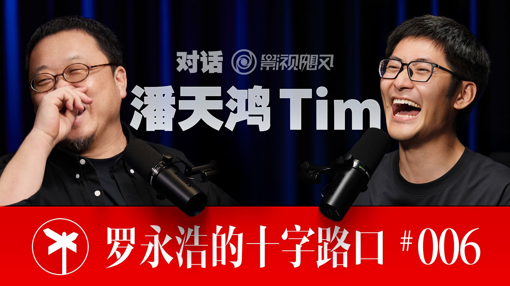

封面来自 B 站 @罗永浩的十字路口 PEOPLE · 罗永浩的十字路口
影视飓风 Tim一个用理性丈量一切、却想死在火星的影像偏执狂
我用最理性的方式，去够最浪漫的边界——凡人皆有一死，我五十多岁拼一把，也值得。
罗永浩 × 影视飓风 Tim · 全长 2 小时 52 分
① 他是谁 Tim，本名潘天鸿，1996 年生，杭州人，影视飓风（MediaStorm）创始人。B 站头部、连续多年百大 UP 主，全网粉丝两千万级，是中国影像/科技区当之无愧的第一梯队。
但你在这场对谈里看到的 Tim，和镜头前那个"阳光、讲究、画质狂魔"的形象很不一样：他自述是个中度社恐 、几乎不出门、靠外卖度日、年纪轻轻就高血脂脂肪肝；他的人格底色不是"阳光"，而是小学二年级一次"付了钱却被当众诬陷成小偷"留下的——"原来努力不一定有好的回报，甚至不会有人出来帮你说句话。"
一句话定位他：一个用极致理性丈量一切、把世界当素材、把"讲究"当信仰的 95 后内容工业家——偏偏他的终极梦想，是死在火星。
② 生平（极简主线） - 穷养的"隐形富二代" ：父亲从农村考进浙大、天才级人物，后做到上市公司董事长（家境真正转好，Tim 直到上大学才知道——父母把房子、财富对他"藏得非常之好"，坚持不给现金、洗碗一次给五毛）。这套"穷养"叙事，是他后来被质疑"靠富二代资源"的伏笔。
- 被游戏与现实抛弃的少年 ：初中沉迷游戏、骗父母骗老师整年不上学，中考"烂到没法接受"，父母"卖了个房"送他去英国。留学第一年不会英文、睡裸床、被霸凌（手上至今有烟疤）。
- 影像启蒙的偶然 ：高一被学校指派拍毕业典礼视频，全场起立鼓掌——这是他人生第一次从现实世界获得正反馈 ，从此入行。用 Movie Maker、会声会影起步，2014 年（高中）建号，最早用过别的旧名、后改"影视飓风"，优酷起家、2016 转战 B 站。
- 从教人拍片到内容工业 ：2016 年在英国注册公司，2018 大学毕业回国全职。2019 年《20 万粉收入》一期一周涨到 45 万粉，奠定地位。如今约 150 人团队、四象限账号矩阵（专业/大众 × 长/短）、自有品牌（单款 T 恤 20 万件）、不融资、现金流为正。
- 现在的他 ：太空气球、买卫星、荒岛直播 100 小时、画质风波（《清晰度不如4年前》全网下架）……一边把"讲究"做到极致，一边把自己往蛇岛、大白鲨、火星上推。
③ 为何受访 · 为什么是这场对谈 明面主题是"用影像打开世界的梦想家"，但这场对谈的底色是两个高度相似的人在互相照镜子 ：
- 罗永浩 ：先做网红后创业，自承内向、ENTP，做播客是为了"偷别人的经历、顺便交朋友"。
- Tim ：自承内向、INTP，几乎不接任何访谈、"全部拒绝"，唯独罗永浩这场愿意来。两人 MBTI 只差一线、都"好斗的内核"、都把自己定义为"理性大于文艺"。
所以这不是一场"采访"，更像两个老炮的同频对谈：一个 53 岁、一个 29 岁，隔着一代人，却在"内容/商业/AI/被误解"这些事上不停地"对，对对对"。Tim 此刻最想讲清楚的，是他这套"用理性把内容做成工业、又对 AI 既兴奋又恐惧"的世界观 ——而罗永浩恰好是能接住的人。
④ 他代表哪类人（可迁移） Tim 是一类人的极致样本：把"内容"当成可被拆解、量化、规模化的工程问题来解的理性派创作者 。从他身上能抽出几条对普通人也成立的迁移点——
1. "参透你为什么会火"，而不是自我感动。
他有句黑话：do stupid thing win stupid prize（做傻事赢傻奖） ——别花大心思做一个"只有 8000 播放、但圈内人说好"的自嗨作品，那等于"错过了 8000 万的人"。他认为自媒体最难的修炼是大众情绪感知 ："你必须能感知大众的情绪才可以获得增长。"对任何做内容、做产品的人：先想清楚你要的是小众还是大众，别又做小众的东西、又怪大家不理解你 。
2. 想清楚你这行有没有"规模效应"，没有就去造一个。
他点破内容行业的死穴：不可规模化 ——"我做一期是一期，每次都要重想创意。"他的解法不是签更多博主（"不然迪士尼就是最好的内容公司"），而是把影响力导向有规模效应的消费品 （自有品牌 T 恤、电商）。这是"内容创作者的尽头是消费品公司"。迁移：如果你的核心能力不可复制，就去嫁接一个可复制的变现载体。
3. 弱小时，唯一该焦虑的是"没有对手"。
别人怕被后浪拍死，他反过来说"现在主要是没有太多竞争对手才是坏事"，巴不得有个野兽先生级的对手逼自己。这是强者心态：把竞争当氧气，而不是威胁。
4. 公平比慷慨更重要；分钱不分股。
他年轻时"讨好型人格、过于大方、特别爱分钱"，后来才明白"你不是分得越多越好"——真正健康的是产出与回报对等 。加上父亲的理念"发现不对了，尽早把钱分了、各做各的；内容行业分股容易崩"。对所有合伙创业的人：慷慨会失控，公平才长久。
5. "破不了我的防"是练出来的能力。
面对"靠富二代资源"的长期质疑，他从"有点阴影、不想被冤枉"练到"前提就不应该去搜这个事"。他对此的洞察很通透：很多归因（他是富二代/含着金钥匙）是失败者给自己找的解释 ——理解它，但不必被它伤到。
⑤ 普通与不普通 普通的地方，普通到反差强烈：
- 他自称中度社恐 ：机场要找最角落倒着坐、躲休息室、被人举手机拍会"很恐怖"；要见人之前得花五到十分钟做心理建设才能"满面春风地营业"。
- 他几乎不出门 ——不看电影、不逛街、只吃外卖，29 岁就高血脂、脂肪肝。
- 他线性代数/微积分没学好 、中考烂到被"卖房送出国"、留学第一年因为没钱去夜店给人拍照、申请当"蛋白粉小白鼠"省饭钱（"拉出来的屎全是白的"）。
- 他被叫错名字到习惯——"狂暴影视""暴风影音""影视飙风"。
不普通的地方，是同一种特质的两面：
- 极致的"讲究"（精神洁癖）。 从第一天起制作就精良，"不能容忍不精良的东西，就像你不会喜欢烂的倒角"。这种偏执让他把影像做成了工业级标准。
- 把世界当素材的好奇与狠劲。 太空气球、买卫星、荒岛 100 小时（蚊子咬到发烧、放大镜钻木取火、蛋白棒度日）、十万伏特电击枪、和抹香鲸同游、计划去蛇岛和大白鲨——他对"只为生存这一件事思考"有种纯粹的迷恋。
- 理性到反常的风险计算。 他做这些"疯事"却坚持"安全可控、有专家陪"，会用幸存者偏差反驳直升机危险论，明确说翼装飞行"概率太高，不做"。他不是不怕死，他是把疯狂也拿去做了风险建模。
一句话概括他的不普通 ：他把一个社恐少年的"向内"，彻底翻译成了一台"向外把世界拆解成内容"的精密机器——用最理性的方式，去够最浪漫的边界。
⑥ 反认知洞察（这场对谈里最值得带走的几颗钉子） 1. AI 打破的不是某个岗位，是"努力有回报"这个底层信念。
最扎心的一句来自他："AI 时代打破了一个最核心的点——努力有回报，没有回报了。" 你十年的努力，在一个全知全能、进化速度远超你的模型面前"配不上"。这和他小时候"被冤枉偷窃"得出的那条人格底色诡异地呼应了。但他给的不是绝望，而是冷静的时间表：剪辑、调研、制图"两年内绝对被替代"，真正的对策是个人意识——"愿意学的拦不住，不愿意学的推也没用。"
2. 想法"平权"之后，最不安全的恰恰是创意。
反直觉点：大多数人以为 AI 时代"创意是人类最后的护城河"，他偏说"创意是绝对不安全的" ——不是你的创意不行，而是"有这么多人加入战场，大团队和小团队没有成本和执行力差别了，你凭什么确定你的想法配 AI 就比别人的更好？"当执行力被 AI 抹平，唯一的稀缺不再是"会不会做"，而是"是不是你"。
3. AI 拼不起来的，是"人生经历"这块基石。
那什么才安全？他给的答案是人生经历 ——"AI 没办法做忒修斯之船"。它再全知，也没有从小被佩戴在你身上、和你吃过同样的苦、流过同样的泪；模态还缺好几个。所以"大家看罗永浩，你不是一片白纸，大家对你有先天的预设"，而 AI 造的数字人"在别人面前是一片白纸、没有持续性观众"。在一个什么都能被生成的时代，你被诬陷偷过吸管的那段记忆，反而成了你的 cornerstone。
4. 比短视频更强的，是"把短视频拼成的长视频"。
他对内容形态有个领先判断：短视频证明了比长视频受众大，但终极形态是"全程无尿点的长视频合集" ——像车祸集锦比单条车祸看的人更多，因为"人是越来越懒的，长视频要选择、短视频要滑动，而拼好的长视频连划都不用划"。野兽先生就是这么赢的。这是对"长 vs 短"之争的降维解法。
5. "站着把钱挣了"在观点型媒体里近乎不可能——除非你让羊毛不出在羊身上。
做评测/数码媒体最拧巴：观众要你客观，厂商要你说好。他的破局不是装清高，而是让收入结构不依赖被评测方 （"我们羊毛尽可能不出在羊身上"，钱从拍样片、自有品牌来）。配套一个冷峻判断：互联网时代订阅制在中国走不通（"你收费别人免费，你就干不过它"），所以必须在商业模式层面解决独立性，而不是靠自律。
6. "做 AI 的人会站着把乐观说了。"
一个旁观者的犀利观察：到访谈里的科技领袖（李想、何小鹏、周鸿祎）都对 AI 表示乐观，而私下从业者、海外大佬却普遍恐惧。Tim 一句戳破——"我怀疑他们也害怕，只是因为在做这个，所以必须表示乐观，不然以后出了 AI 功能不就打脸了吗？" 提醒我们：听一个人对他自己所在行业的预测时，先看他的屁股坐在哪。
尾声 · 一句话留给读者 Tim 最迷人的地方，是他身上两股力的对冲：一边是把一切——内容、情绪、风险、甚至死亡——都拆成可计算变量 的极致理性；一边是偏要去荒岛、去大白鲨、去火星 的浪漫冲动。
他用前者，给后者上了保险。
所以当他说"凡人皆有一死，我 50 多岁拼一把死了也值得"的时候，那不是莽撞，是一个把疯狂也做了风险建模的人，给自己签发的通行证。
如果你也总在"该稳还是该冒险"之间犹豫，他给的其实是第三条路——把你想冒的险，先拆开、算清、控住，然后，去。
完整对话 · 全长 2 小时 52 分
穷养的成长环境与天才父亲 罗永浩：
好，今天我们的嘉宾是我们历史上邀请过的最年轻的一位创业者，他就是影视飓风的 Tim，欢迎 Tim 来到我们的播客录制。
Tim：
大家好，我是 Tim，非常高兴能够来到罗老师这边的这个播客空间。各位喜欢的话一定要记得点个关注，并且三连，就有非常大的帮助，非常感谢。
罗永浩：
今天这个节目绝对待见，欢迎大家收看罗永浩的十字路口，最重要的是一键三连和加关注，还欢迎随时发送弹幕评论跟我互动。好，我们开始吧。
罗永浩：
我们照例请的嘉宾都是从小时候开始说起的，说说你小时候那个成长环境，因为关于你的家境有很多江湖传闻。
Tim：
好。小时候我就在一个相对标准的家庭里面长大吧。什么叫相对标准的家庭，就是工薪阶层。因为我爹原来——我爷爷奶奶辈就是农民，然后我爹他属于他真的属于奇才，客观讲他属于天才级别的，他自己从农村里面考上来，当年直接考进浙大，然后托福满分，我不知道，2300 多分。
Tim：
你父亲没有钱寄那封寄到哈佛大学的信，就没有留学成功，就是寄信的钱没有。
罗永浩：
明白，都不说能不能上学的学费的钱，就没有钱寄信，所以就没去。
Tim：
对，所以他后面靠自己做。以前是做插座和插头的，家里面在一个叫鸿雁电器的公司——也不太小。
Tim：
对，还可以，就上班。然后做得还可以，所以我小时候印象里面是在一个 60 多坪的房子里面长大的。然后在楼顶，发洪水经常会淹掉，就是楼下的房子，所以我小时候坐在窗台上看着楼下的房子在水里面泡着。
Tim：
小时候不能说这么困难，但反正条件不能算好，我只能这么说。
全托幼儿园与拉裤子无人理的记忆 Tim：
大关小区，以前有个小商品市场那边，那个地方我们就在那边长大。然后小时候因为爸妈都非常忙，我妈妈以前其实收入比我爹要高很多——有人说我妈是院长，这是瞎说，我妈是做医药销售的，所以以前就特别特别忙，但我妈非常努力，以前赚的比我爹是多很多的。
Tim：
然后所以因为小时候他们很忙，我就被送到全托的幼儿园，所以从小我就不是特别常见到爸妈。
Tim：
后面是跟爷爷奶奶还有外婆长大，但是小时候幼儿园的时间我就被送到一个全托的幼儿园。
Tim：
对，就因为太忙了，所以我爸妈那时候也还挺愧疚的。但因为小时候真的很小很小，我觉得印象有个很深的，就是我记得我拉裤子上了，没有人理我。
Tim：
没有人管，然后我就跑到窗台上一直哭着喊爸妈，但没有人理我。这个我小时候记得比较深的一个场景。然后到小学，我就变成走读了，我们家搬了一个房子，住到了一个小的公寓里面。我小学的时候成绩还可以，就不算差，就一直还算比较努力。然后但是有发生过一个事情让我印象特别特别深刻：我在小学的时候没有什么零花钱，我必须洗碗，洗一次有五毛钱。
Tim：
但我小时候很喜欢模型，我喜欢玩飞机，然后我就一直攒钱。但是我记得有一次我攒到五块钱，
买模型被冤枉成小偷 Tim：
然后去买了一架模型的飞机，是从门口的小卖部，学校门口都有。
Tim：
是的，要自己组装的。但我家里面其实不怎么建议我玩，那时候家里面管得还挺严的，我会背着。然后后面我家里面的一位长辈发现了我有这个东西，他以为我是偷的，他就把我直接揪着回到了那个小卖部的店里。但很可惜，那个老板他就说我是偷的。
Tim：
然后当时就所有的同学都看着，就是我是小偷。所以那时候我心里面就有了一个念头，就是好像原来有时候努力不会有好的回报。我在小学二年级就有这个概念了。我那时候非常恨。但当时这个事情就发生了，即便后面家里人也意识到了，但没有跟我道歉，也没有跟我去澄清。
罗永浩：
你是说家里后来知道是你买的，但是也没有去帮你澄清？但你到今天也不知道那老板为什么要说你是偷的？
Tim：
那时候二年级，小学二年级。我 96 年，那应该是六岁了。所以那个对我印象是很深的。
罗永浩：
这个事比我经历的还邪门。我小学的时候也被冤枉是小偷，这种感觉很折磨。
Tim：
对，但我这个还没你那个离奇。我记得我在十几年之后再去过那一次，又看了一眼那个老板，还在那，但我已经没什么情绪了。
Tim：
但我那个情况是不太好报复，因为他误以为我是那个人。如果他是蓄意冤枉我的话，
苦难塑造人格与不内耗 Tim：
但反正你只要说内耗，可能是我自己向内的内耗会比较多。我觉得它一定塑造了我现在的人格，我觉得未必是坏事。苦难是不应该去迎接它的，但是既然发生了，我就接受了。
Tim：
对，所以小时候就养成了一个概念，就是原来我直接努力是不一定会有好的结果，甚至不会有人出来帮我说句话。所以小时候是这样，家里面以前压力还挺大的，因为讲真，家里真的不像大家想的从小是富家小朋友，没有什么钱。然后后面有过我爹投资失败，有过那些家里没什么钱的时候，也有过起起落落的。
Tim：
家境转好——其实这个很有意思，我真正知道家里面开始变好，其实是我上大学的时候。我不知道，家里面一直对我藏得非常之好。他们买的房子从来没有带我去看过。
Tim：
我从来不知道家里面有几个房子，我到今天都不知道家里到底有几套房产。
罗永浩：
那是后来了，就是你去大学之前还是跟你住在一个破房子里？
Tim：
也不算破，就是还可以，普通的公寓。但他们买了更好的大房子，他们自己也一直没有过去住，直到我大学，就是我出国以后。
Tim：
就是你会有一点隐隐的感知，就好像老爸好像去做董事长了，他以前去了一家上市公司做董事长，但好像生活上没有什么变化。但他们一直都对我是非常保守的。
父母坚持穷养、不给现金 Tim：
他们可能觉得要穷养，可能就是这个概念。直到大学哪一天，我记不得了，就是突然去看了他们的一套房子，想 what，怎么有这样的房子。但是只能说，以前那个很超出我认知，就真的有点小说里面的感觉，就突然发现自己是豪门子弟那种感觉。但他们也没有给过，他们一直是不给我现金的，父母一直是坚持不给我现金。
Tim：
我大学在肯特大学，在英国。我初中毕业就出去了。其实刚刚人生经历有点没有讲完，就是我小学的时候成绩反正就均匀地走。但后面我就发现现实世界我不是特别想待，我想玩游戏，我发现游戏世界人都挺好的，然后就去玩了一个叫冒险岛的游戏，很古老的游戏。然后玩完了以后，小学的成绩——我觉得我脑子不算太笨，所以我不上课我也能考还行。
Tim：
对，但到初中我发现，初一我是能够不上课不听还能考，初二就不行了，然后成绩就开始一路往下走了。我越来越发现现实这些好无聊，然后就不怎么上课。我骗我爸妈说我去上课，其实我一整年骗老师说我生病不上课，就这样一年，其实我没怎么上学。然后就导致初三中考就巨烂，烂到没法接受的级别。那我爸妈说废了废了，真废了，出国吧。然后就跟我说卖了个房，就没钱。
卖了个房送出国留学 Tim：
讲真，我其实不知道那时候到底有没有钱，到现在我都不知道。就是也有可能他们有十个房，然后跟我说卖了个房，就说卖了一头牛一样的故事。
罗永浩：
一样的。不，这个事越听越奇怪。你是独苗吗？
Tim：
我是独苗。我爸妈是非常保守，可能因为我妈妈那一辈也是穷上来的，我爸那辈也是穷上来的，他们觉得儿子要穷养。哪怕到现在家里面还是会囤水瓶子、纸板箱，还是要留着要卖的。
罗永浩：
所以你一直到学习不行、家里要送你出去的时候，那时候是不是家境已经好了，你也不知道？
Tim：
到现在……我觉得应该还行吧，但反正没有特别好。
Tim：
寄宿到一个家庭里面了，然后就在那边上高中。英国高中是两年，但是我上了一年预科。在那边那个学校很特别，当时只有我一个中国人，我爸妈特挑的，他们去英国走了一圈。第一年真是折磨，你要知道我没上过学，我英文是不会说的，进了一个学校，我有一个礼拜是睡在一个裸的床上，因为我不知道怎么去要被套和被单，也不敢和别人说话。所有人都可以交流，只有你一个不能交流，你像是外星人在那边一样。但比较好的就是我的室友有乌克兰的、有德国的、有马来西亚的，人都还好。然后第一年也被俄罗斯的同学欺负，也有高层的欺负。
罗永浩：
就揍你这种？国际学校的国际学生凑起来的高中也有那种霸凌是吗？有暴力的吗？
留学被霸凌、烟疤、叛逆 Tim：
我没有投诉，因为我不知道怎么投诉，你知道我不会说英文，我怎么去描述我被一个同学堵在厕所扇了三个巴掌，我没有办法讲。但后面那个人被开除了，有个俄罗斯学生。接下来有故事，就以前之后还挺叛逆的，你可以看我手上会有一个——这我从来没展示过——你可以看到我手上有这么一个隐隐的疤，被打倒在地上用烟烫的。
罗永浩：
那经历还挺离奇的，因为你永远在镜头面前表现得特别阳光，所以我还以为小时候即便不是豪门也是挺顺的。
Tim：
我觉得我虽然是一个非常叛逆的人，我玩游戏，我 13 岁就离家出走了，就 13 岁就自己去武汉了。
罗永浩：
明白。所以你像后来对影像器材感兴趣，都是自己赚钱以后的事？
影像启蒙——拍毕业典礼视频获得第一次正反馈 Tim：
不，我是在高中的时候给学校拍一个毕业典礼的视频，那个视频现在我觉得做得剧烂，但是当然拍了，所有人都哭，然后这是我人生中第一次获得真正意义上认可。这是第一次现实世界给我这样的认可，所有人站起来鼓掌，因为是毕业典礼，所有人都哭，然后觉得这可能是我最想做的事。就这个感觉才让我进了影像这个行业。
Tim：
不不不，是我在高一的时候，给之前的高三的学生做的。
第一次拿起影像器材、会声会影起步 Tim：
因为他们觉得我游戏玩得好，很离奇。因为别人也不会，就看你一个人天天对着电脑，然后也不怎么和别人交流，不怎么 social，因为我比较内向，觉得适合。
Tim：
对，完全不懂。以前剪过一些游戏视频，那就是 Movie Maker，以前那 Windows 上的玩意。剪那次用了会声会影，对我来说已经是天文级的难度了。就这样就走上了影像的道路，很离奇。
罗永浩：
所以我以前误以为是你小时候喜欢这个，父母又支持给你买过一些器材，然后在这个器材堆里长大的。
Tim：
没有没有，因为我网上也经常有人说，好像我一开始就给我买了超级贵的设备，不是。其实一开始我最早是一个大大的、一个破的，大概七八千块钱吧。但确实父母也给了我一些支持，他们愿意支持我东西，他们不支持我钱。后面几台其实也都是父母给买，这个点我从来不否认。然后最贵的一台是我问父母借的，就是到我大学毕业的时候，我问父母借了 16 万买了一台叫做 Red 的摄影机。
Tim：
Red 的，那时候已经是第三代了。那是大学毕业的时候买了第一台，然后半年之内就还清了。其实我高中的时候，后面就全部铺在视频上了，我又开始不听课了。然后导致后面我有了作品集，我给布里斯托大学——已经算很好的大学——发了我的作品集，他们给我发了一个巨低门槛的一个 offer，
差一分进肯特大学、作品集破例录取 Tim：
结果也没考到，差了一分。然后本来分数已经低到肯特大学这些学校也不会要我的，但是我硬生生就和父母去了那个学校，给他们老师看了我的作品集，他当时就决定要我，因为作品集确实还不错，艺术类院校嘛。
Tim：
对，然后最后给我开了特例，破格进了肯特大学。但人生轨迹就因此发生了些变化，就差一分。
罗永浩：
然后那期间有什么东西出来吗？因为我知道你的时候是已经是回国做那些号了。
Tim：
对，我大学是我创作最多的时候，每天我戴着耳机自己听着音乐上山，然后就想今天怎么拍下一个视频，每周更新，我从高中开始就一直每周更新。
Tim：
不是吧，那时候最早我就是 Tim 潘，后来改成了影视飓风。最早是哈拉普萨，然后还改成了影视飓风，同一个号后来改的名。
Tim：
优酷。我们那个年代优酷就相当于是 YouTube。然后后面再到 B 站再做。
Tim：
有五万，如果没记错。然后 B 站就是主战场。那是 2016 年，我记得很清楚。我 14 年开始做频道的，应该是高一的时候先起了一个号，做到 2016 年我们就意识到 B 站是更快速增长的频道了，就转过去了。
罗永浩：
你这些就是有父母引导你吗？还是你的兴趣自然形成，然后他们给了一些器材方面的帮助？
Tim：
有，我父母很好一点，就是他们真的非常关心我的视野，但不过多干涉，必要的时候可能会给我一两句话的指引。比如说我父亲就跟我说，你得从一开始就记录，
父亲从商业角度的指引、偶然性与职业方向 Tim：
你账号的粉丝量是怎么增长的，每个月写一个报告。当时每个月可能就加 50 粉丝，但现在再回过来看，你会意识到你的爆发式增长是怎么样的。
罗永浩：
他是从商业的角度关心，但你父母都不关心或没有玩过影像这些东西对吧？
罗永浩：
所以你其实还有很大的偶然性，只是因为学校的时候被指派做了这么一个事，得到了一个巨大的正反馈。那你有清醒地意识到把这个当成未来职业方向，其实就是那个时候吗？
Tim：
反正 16 年的时候我父亲跟我说，你值得先开个公司，那时候我就会意识到这个事会正经一点。那时候我还在英国呢，我在英国就成立公司了，我 18 年才回。然后就暑假的时候回中国先注册了公司，16 年 8 月份。
罗永浩：
然后还有，你公开说过你是个网瘾少年，主要就是打游戏吗？
Tim：
还是所有的都上瘾？打游戏其实也挺上瘾的，就是我干什么都是很上瘾。我觉得网络世界信息密度更高，主要现实世界信息密度太低。
罗永浩：
还有你成长的时候现实世界正反馈相对少。所以你性格也是比较内向之类的吗？
Tim：
小时候，我觉得我现在也挺内向的，我真的没有什么从外界靠和朋友聊天获得能量的这个过程。
罗永浩：
那你真实生活里跟别人待人接物的时候也是永远面带微笑吗？还是只在视频里这样？
Tim：
我觉得我现实中还是基本上和视频里面是一样的，我可以保持一个相对高能量的状态和人交流，但是如果真的让我自己一个人的话，就会很蔫、很安静。
内向/外向、ENTP 与 INTP、好斗的内核 Tim：
我觉得我是一个高能量的人，只是我平常不释放。你内向？
罗永浩：
我内向，我其实很羡慕那种跟人打交道的时候没说话先笑的那种。我到了 40 岁以后甚至做心理和精神检测以后发现，我的能量需要的时候可以鼓得很厉害，但是其实我的正常状态是别人微微不高兴的状态。
罗永浩：
我在内向和外向的中间，后来去测了，大概就是我是 ENTP，然后朝外向去了 1%，所以基本上是在中心线上。
Tim：
是刚好在内向和外向的中心线上。我是 INTP。
罗永浩：
INTP，我是 ENTP，其实我们人差不多。那你是性格上好斗的吗？
Tim：
好像这个倒没有，但就是假如我知道一个东西我落后于别人，我会心里面一直记得这个事，要超越人家。我会较劲。
罗永浩：
这个其实是好事。有意思，跟网上看到的完全不一样。
Tim：
很多时候别人对我误解也特别多。但是我现在没有个人化表达了，就是我现在在任何平台上没有个人的表达。
Tim：
对，我发现你就是一阵一阵，你会突然就……然后突然又没声音了。
电影专业方向——视效转理论 罗永浩：
今天不聊我了。然后你在英国学那个电影专业的时候，是哪个具体方向？是导演还是编剧？
Tim：
一开始是有一点视效方向，视觉特效的，因为我之前喜欢特效。后面再转了一点前期，还有理论的东西。理论有点枯燥，但是稍微有点用吧，就是跟人文绉绉聊天的时候，你跟他说电影怎么来的、怎么过去，可以聊一点。
手术刀团队做短片冲奥斯卡 罗永浩：
那你做了这么多年，我初期看的时候感觉你是偏技术流的，特别喜欢器材本身。但是你学的电影专业，然后没有过想做电影的想法吗？
Tim：
有个团队，就是我叫手术刀的一个小队，我们公司就一直成立了已经三年了，他们就是只做厉害的短片。就是我觉得我自己已经没有时间去追逐这个所谓个人导片子的梦想了，但是我可以让厉害的人去做。一年也得大几百万可能，三年也得快小千万级别的这个投入吧。
Tim：
我觉得心理上是 OK，我就先从短片开始吧。因为我们现在短片客观讲已经有 11 部进了奥斯卡的预选赛了。就是奥斯卡是要求你必须先进别的电影节的预选，才有机会被选中以后再去投奥斯卡。我们希望角逐奥斯卡短片奖，短片流程会更短，迭代周期会更快，我很在意迭代周期。
罗永浩：
因为你们出道的时候已经是互联网为主要载体了。
Tim：
是的，所以我认为短片在社媒平台上传播能力会比长片要强很多，长片不一定是最优解。
罗永浩：
我现在都有一点担心我自己过于武断地去看这个世界的变化，比如我开始对那个小美小帅那种，
小美小帅、解构主义与《浅薄》 罗永浩：
是特别排斥的。而且我们起初包括电影公司开始认为这种短片会使得大家看了一个精华的剪辑之后会对长片本身感兴趣，所以电影公司觉得也没损失什么。但后来发现形成了亚文化，大家就索性不看长片了，就只看短片。所以就开始打起官司来了，这个转变是我做梦都没想到。然后我现在去看那些完全追情节的东西，也觉得一个五分钟的小美小帅就已经完事了。但如果这个电影被认为是一个有价值的、有深度的，我还会去想看长片。
Tim：
对，我现在就有个理论我自己慢慢在形成，就叫解构主义。就是内容现在这个时代会超级容易被切片和拆分化，但这个东西其实对原意的扭曲是巨大的。任何一个话带出语境就不对了，我觉得解构视频比解构文字更恐怖，因为有太多种减法可以去切开你的内容。每个人都可以从同一句话里读出他想要表达的东西，他只是借你的话来表达他的东西。
罗永浩：
以前互联网红起来之后越来越产生了大量的碎片化的内容，所以有一阵出了一本很出名的书叫《浅薄》，你看过吗？
罗永浩：
是讲说人类社会大家吸收获取信息，以前是有碎片化的，也有读书的，也有大部头的。但现在越来越满足于那种即时的兴奋。那个还是在没有 TikTok 和抖音这种出来之前，他就有这个理论了。他说人类如果沉迷于海量地接受这种碎片信息，没有去研究大部头的、正经的作品，认知和头脑训练就会越来越傻，
浅薄、变笨、信息密度与极端化表达 罗永浩：
然后就变得越来越浅薄。我那时候还觉得是盲目悲观，我那时候很信那种理性乐观派的观点。但是等到现在超短的视频火到大家一晚上刷六个小时以后，我也有一点不安的感觉，就是说年轻一代如果只看这些会不会真的变笨了。尤其是现在接触人工智能以后，又发现这个训练最终会产生什么样的后果。但又一方面，我们以前认识的一些影视圈很多做正经大电影的人，现在因为赚钱也都去拍竖屏了、拍短剧去了，而且是拍那种弱智的短剧。所以有时候我不知道，因为我担心我对它现在感受到的负面，是因为研究不足导致的肤浅判断，那就有一点像是你拿着旧世界的观念，然后没有做深入研究，高高在上又去看它了。但是我真的目前为止还没感觉到这种趋势有什么好的结果。
Tim：
就是人的本性，就追求更高信息密度的传递的方式。但是重点在于，极端化表达——当最终都在博眼球的时候，表达就会极端化。所以我觉得这两年我们最明显的一个变化，就是我们做封面也只能跟着极端起来，不然别人根本不会点进来，我都不用看里面内容我就输给营销号了。所以标题党这件事变得史无前例的重要。然后还有一点很有意思，这两年视频的响度，
视频响度、HDR、摇一摇广告的注意力争夺 Tim：
你去听，和十年前的视频的响度差了超级超级多，所有人都在偷偷把音量往上拉一点，音乐往上拉一点，所以所有视频平台大家都在比谁叫得更响。因为你第一秒就要让它感受刺激。然后包括现在手机有 HDR，就是屏幕变亮的这个功能，本来是为了看视频体验更好，但现在所有的广告都会开始做 HDR，会特别亮。有一瞬间你会感觉你刷到朋友圈里面某个东西会特别亮，这是因为厂商开始用 HDR 广告抢你的注意力。
罗永浩：
你看有人注意到了吧，超级离谱。但是我有时候会觉得，如果所有的都用了 HDR，你可能会调整到一个合理的亮度，偶尔推到一个用 HDR 拍的户外的时候，闪光弹对眼睛就特别疼。但是这件事可能会导致大家都使劲，该上不该上都上，最后就全是更刺激眼睛的东西。
Tim：
对，还有一个例子，摇一摇跳广告跳转，这我觉得超级……
罗永浩：
几天以前张衡都不用发明地动仪了，我在桌上放手机，哪边打开广告了哪边地震。
Tim：
确定这个趋势不会有问题吗？我还挺困惑的。网络的表达极端化肯定是有的，因为最终博眼球的是获得胜利的，所以各个方都在想尽一切办法去往上怼。
罗永浩：
短片这件事，你去想，大家很兴奋地看了六个小时以后，你其实回想起来收获并不多，因为都是很浅的东西。因为我们过去学知识，总是有很多很泛的碎片化的，也有很多很深入的，这两个其实缺一不可，一个是培养自己在某个方面成为专家，另外一个是
碎片化挤占深度学习的带宽 罗永浩：
你不能信息太闭塞太窄。所以这两个都很重要，但现在这样的趋势感觉就没有任何深入的研究和大脑训练，只剩了一堆泛化的碎片。所以我现在也感觉我无用的庞杂的知识比以前多了很多，但这些事有什么价值呢？而且它占用了我在某一个方面深入学习的时间。所以这个时代我们真的需要知道——还有没有必要去知道那么多，知道那么多干什么呢？因为我们头脑的容量、带宽就那么些，结果被这些碎片化的全部塞满了之后，任何一个方向的深入都可能损失了大量的时间和头脑训练。
Tim：
对啊，就为什么需要知道这个明星做了啥事、那个明星做了啥事，还和我的人生没有任何关系，但是我就是知道了。
罗永浩：
就知道就占用了我天然的带宽。而且你连续看了一个礼拜 15 秒的以后，就感觉到 B 站上看 15 分钟的已经感觉是长篇了。
Tim：
是的。但是我感觉这个时代也有在变化，就是以前我认为五年以前的互联网在乎精英式表达，就做得很板正，特别漂亮的置景，和你侃侃而谈。但这两年我明显感觉做内容就是你必须要接地气的平视化表达，大家已经慢慢地又开始拒绝这种精英式高密度表达了，更真实的表达会更好。
罗永浩：
那现在有了这种短视频平台以后，它的爆发，我认为整体上只要不是特别出格，整体上是一个健康的，这部分客观需求是存在的，然后它被满足了，我觉得挺好。但是等到全社会包括精英阶层也沦陷于那些不停追求短时间刺激的短视频以后，我其实是已经没有答案了，因为全世界都在做这个事。还有以前咱们老说那些霸道总裁那种爽文爽剧，好像就是在中国没受过文化的阶层特别喜欢，
爽文短剧杀到全球都管用 Tim：
中国做这些内容的杀到全球都管用，美国人太喜欢了。
罗永浩：
所以我现在希望我再年轻一点或再老一点。但刚好处在中间这个年龄段，就觉得完全不关心这个事也不对，然后也没有精力去研究这件事，所以我对未来还是挺困惑的。
Tim：
我觉得罗老师你要是认真看一看这些短剧，你也会看进去的。
罗永浩：
实际上我是在刷抖音的时候，因为零星地会有一些它是作为引子的，让你先看个五到十分钟，然后看你能不能忍住不付钱追下去。所以我也有好几个差点就付钱，然后到最后一秒我忍住了。我一直很想拍一个短剧：如果在乔布斯上台之前，瞬间给他一台 iPhone 17 Pro Max——发布第一代 iPhone 的时候——这个剧情会怎么演化，你不觉得很有趣吗？
Tim：
想想挺刺激的。你要那么说，我也想拍一个，拍一个他有一天实在受不了了推开棺材板，就从地里冒出，然后过去把这帮孙子全开除了。
罗永浩：
对。然后还有个短剧设想，就全世界只有我会拍照，应该也是个爽文，全世界都不会拍照，就你会拍。
Tim：
那你为什么还没动手？你们具备所有的条件和专业技能。
罗永浩：
这种恶俗的没好意思。你匿名拍，假装不是你们团队，火了以后再被记者挖出来是你们拍，你不觉得是个爽文吗？全世界只有你会用手机，全世界只有你会用 AI。
Tim：
为什么会这样呢，我们本来身边有一堆产品经理什么的，原来也都觉得那种短剧太恶心、太恶俗，所以都天天骂，骂着骂着后来大家都不骂了，然后再过了一段，大家发现其实每个人都在自己偷偷看，
短剧赚的钱比骂的人多，大家都老实了 罗永浩：
还是那个最重要的，是你发现他赚的钱比你多多了。
Tim：
做短剧的赚的可比骂的人赚的多多了，最终大家都老实了。就是你可以不喜欢短剧，你不可能不喜欢钱吧。
罗永浩：
我觉得真正难于平衡的是你们在这个行业里，结果他做最恶俗的最赚钱，你做最优质的最不赚钱，我完全接受这个，心理上是很难接受的。
Tim：
其实这是我今天想找罗老师你讨教的一个问题。
罗永浩：
（口播）好咖啡不能少，感谢合作伙伴瑞幸，把瑞幸咖啡店开在了罗永浩的十字路口。
做媒体能不能站着把钱挣了 罗永浩：
当然有可能。但是你的目标是什么，如果是你要做这个圈子里最赚钱的，那肯定不行。比如说爆米花电影，很多专业的影视工作者也是瞧不上的，但是可能最赚钱的大片永远是爆米花电影。所以你如果想到这个行业里最赚钱，那肯定没法赚这种钱。但如果你想在这个圈子里赚到一个钱，你就够了，剩下还是对理想追求，这样的话其实我觉得还是不难。如果连这个都做不到，那可能还是你不够强。
Tim：
其实我讨论的是手机和数码，就是汽车、手机、数码媒体，这几个媒体你会发现超级难站着挣钱，是因为它是观点的输出者，观众来看是看你评测，但其实厂商之下，你讲好的对……你一开始可以保持中立，优缺点都讲，直到有一天厂商拿出一笔大的预算……
罗永浩：
这个是本来想后边问你的，现在就提前问问你。因为你们做的内容板块里其中一块就是评测，这个评测你是怎么平衡的？你到现在为止是纯靠其他的广告收入就能维持吗？还是必须也跟厂商有合作
评测如何平衡——羊毛不出在羊身上 Tim：
有合作的。就是我公开讲，我们评测本身确实不收钱，但是现在有的时候是厂商雇我们去拍样片，他会问你能不能出个评测，那这个时候就会稍微有点难办。
罗永浩：
评测必须好的坏的都说，但你只要说一句坏的他就不愿意给钱了。
Tim：
对，但我们现在觉得比较好，因为我们体量已经相对比较大了，影响力大，我们可以讲坏的。但就是你会有点意识到他其实并不是真的想找你拍那个样片，他只想要你这个评测，他想要你这个曝光。其实我们已经算是比较好的，就是我们羊毛尽可能不出在羊身上。
罗永浩：
跟我们情况很类似，做内容的就是会有这个拧巴的情况。但是有一个问题是，如果你把内容做得足够精彩、足够多人看，那你就完全拒绝这类合作也是可以的。但这个现在是绝大多数做不到。
Tim：
但抵得住这个诱惑吗？就是你做得足够精彩、足够多人看了，对面的价码也在不断加。
罗永浩：
那倒是，他说我给你一千万你接不接，这个事确实是很难的。
Tim：
特别极致的两极都不好，就是看这个平衡在哪一个，你往干净里多平衡一点就会好一些，然后你为了赚钱往那边去一点，就迟早就会沉沦。
罗永浩：
你说完全脱离这个我估计也很难。你看美国那个《消费者报告》，在纸媒时代是真金白银地能一份一份订出去，这个时候就相对容易多年维持干干净净。互联网时代没法付钱。
Tim：
互联网时代你如果收费别人不收费，你就干不过它。而且最重要是中国 SaaS 制太难做了，SaaS 制就是订阅制，这个东西特别难做，因为毕竟付的不是美金，你的本身的成本就拉不平了。不要说我们在网络上做这种视频，即使是那种专业团队
订阅制在中国行不通、规模效应难题 Tim：
一个节目一个亿两个亿烧进去做的综艺，那个要大家订阅都那么千难万难，就中国人为虚拟商品付费这件事是特别不接受的。那内容人家不愿意付费，你就必须得想办法。所以我们的策略怎么解决羊毛不能出在羊身上：如果说内容我要依靠别人买我单期内容然后来收一笔钱，就算赚的太多，它是没有规模效应的。内容行业最大的问题是没有规模效应，我做一期是一期，每次都要给厂商想个新的创意，是个累的无比的事情。所以怎么样能够实现规模效应？我们最终的答案是——我现在身上穿的这个衣服，自有品牌。
Tim：
如果说我们今年能卖到几十到上百万件呢？那已经超过大部分那个服装厂商了，这就是我们今年做到的，单款可能 20 万件。但是我们品类很多，所以这是我们今年跑出来的一条路。
罗永浩：
其实我发现你可以靠规模效应，因为电商最重要是获客、退货还有纠错这三个，就跟野兽先生做巧克力一样。
Tim：
是，其实是一样的路径。我去了他那边看了以后，我意识到真的可以奏效，他们巧克力能卖到百亿级别。
Tim：
人民币，人民币百亿一年。其实如果现在去线下任何一个国外的超市，你只要走进去，你会看到它的巧克力摆在最前面。重点是在于情感认同，大家就会去买它。我的获客会比别家低很多很多。
罗永浩：
好，咱们拉回来，一会后边还会谈到那个商业化的问题。为什么给公司取名叫影视飓风？听起来比较酷。
影视飓风名字的由来与个体户起步 Tim：
没有什么特别的原因，高中的时候在想什么东西和影视配的比较厉害，影视龙卷风、影视暴风、狂暴影视，最终影视飓风听起来好一点，往那种很酷很炫的方向去想，就很中二年轻人的想法。
罗永浩：
那你起步的时候注册了公司，那个早期的困难都有哪些？那时候还是一个个体户吧？
Tim：
个体户。早期困难其实你不知道公司怎么运作，你那个年纪你怎么可能知道公司怎么运作，你怎么会觉得把朋友叫上是把公司运作起来的方法。但这个就是踏入了一个公司最常见的问题。也没有不愉快吧，我觉得这方面处理得还挺好的，因为我比较早的就和合伙人比较好的分了一下利润，大家各自做各自的，因为有分歧的时候尽早处理是比较好的。这我觉得是我父亲留给我比较重要的一个建议，就是如果你发现不对了，尽早就把钱分了，大家就好好的各做各的就好。
Tim：
对，阿盛他后面去做车了，确实当时我们意见是有相悖的，他觉得做车，但我觉得影视飓风你做车怎么做，所以我们后面觉得公司财产分一下，各做各的。事实上证明他现在做的也非常成功，我们关系也还是好的。
罗永浩：
那你现在合伙人或公司管理层就没有朋友？都是做这个认识的？
Tim：
没有原来那种朋友，就是先公司以后再成朋友。
不做车评、手机评测只为维持热度 Tim：
我不评车，我只是带车去拍风景，这是最好的一个方法。
罗永浩：
但你手机还是做评测的，手机测这个是什么考量呢？
Tim：
手机我们测的也非常少，我只测比较旗舰的、比较有趣的手机，因为我们钱真的不从这地方来，所以这个更多是维持热度。手机的关注度是相机的十倍，那我天然得做它吧，相机的受众小了。
Tim：
就是给汽车厂商拍这种东西，游戏厂商、手机厂商让我们去拍样片，这我们都很乐意，这个最赚钱。
合伙人分钱难题与公平机制 Tim：
但几个人你也会有纠结。就对方觉得我付出更多，应不应该分这笔钱？我们赚了一笔钱，应不应该分掉？这种时候你就会矛盾。我自己又是比较讨好型人格的人，我是内向的人，我又过于大方，所以经常分。
罗永浩：
你第一次分了很多钱，那你第二次钱不多了，你怎么分呢？对方不满意，你发现你把所有钱给他他也不满意。
Tim：
就你有员工也是一样。因为我太喜欢分钱了，我自己真的对钱没什么大的诉求。然后但你会发现你不是分得越多越好的。
罗永浩：
那你到现在怎么解决这个问题？赚足够多的钱分更多的钱？
Tim：
那还是不行，因为你随着收入变多，你想分的欲望也会扩大。我是找了一个很专业的合伙人才解决这个问题。我知道，因为罗老师你也很大方，但这个其实不一定健康。我年轻时候还挺得意这个东西，但现在我的思维成熟很多，就是我至少得确保我们的产出、每个人的产出和他获得的是对等的、匹配的，公平是最重要的。因为内容行业特别难公平——你有内容火了，并不是因为你做的东西好而火，而是因为这个事件正好踩中了火，那你因为这件事去奖赏他而不奖赏另外一个人，那很奇怪。
内容不可规模化与"亲自经手三四个爆款"的策略 罗永浩：
你们现在团队里边在创作上能贡献最大的——创意、选题、策划这些方面，你还是单一最强的，对不对？
罗永浩：
那这件事长期地看，规模怎么进一步扩大呢？因为有一些跟创业相关的行业永远做不到。比如说有个特别牛的广告创意人，开了个广告公司，做了无数经典 case，结果 90% 来自这个创始人，这个时候他没法去扩张。这就是最本质的内容不可规模化的问题。
Tim：
但是我可以通过创造一个好的公司文化，把人培养成知道什么内容会火。但是要最精准、最爆的内容需要由我来。所以我每年策略是这样：我每年自己亲自会经手三到四个特别爆的项目，比如像 iPhone 的评测，这次是我亲自经手做的，那我知道它百分之百保爆。别的内容我们确保它能够在一个比较稳定的产出之下能够消化广告、让人觉得看得舒服。所以内容你不能随时都卯足劲去做最火的，不然的话你会死的。像野兽先生，他们是越做越精良，烧越来越多的钱，但是能得到越来越大的受众，他也没有实现创作人员的规模化，他是把单体做到足够大的受众。我认为中国是存在裂变点的，我认为中国的裂变点在一个亿的观看左右。
Tim：
单支片子。一个亿的基础观看以后，它会开始裂变式传播。
罗永浩：
现在为止你们这个行业的创作者谁是能做到偶尔上亿的有吗？
罗永浩：
何同学有单支片子放到所有平台累计加起来上亿的吗？你们有过吗？
Tim：
我们也有。比如荒岛，那其实就有两亿人次看过，真人看大概六千万人吧，去重以后。
罗永浩：
去重以后六千万人，你们后台都能做到数据去重吗？
Tim：
只能说勉强去去吧，打不通，不能算特别精准。
第一天就精良——精神洁癖与高标准 罗永浩：
你们走进公众视野的时候第一天开始，制作就非常精良，这是因为你本身就是一个技术流的这种爱好和极客型的性格。
Tim：
精神洁癖。对，就不能容忍不精良的东西，就像你不会喜欢烂的倒角一样，一样的逻辑。所以这个是第一天开始跟你的性格和偏好有关的。
罗永浩：
那你后来开始有团队制作的时候，这个高标准也是你自己定的？
Tim：
是。别的时候我很少生气，但是我发现有人去破坏这个标准的时候，确实会很生气。
罗永浩：
那你们历史上有没有招到过一个人，想法什么都特牛，但是制作精良这件事比较糙的？
Tim：
我觉得想法牛的人一般他的思维细致度是很足的，不太可能出现想法特别牛但是做的不精良。但是有出现过想法特别牛、做得很精良，但是就不适合公司文化的，是有的。
四个账号矩阵——科学、人文、自然、短片 罗永浩：
你们拍的到今天为止仍然是科技的比重非常高，这个也是你个人兴趣导向导致的吗？
Tim：
对，影视飓风这个账号科技的占比是非常高的，但我们现在别的几个账号那科技占比就非常之低了。
Tim：
我们影视飓风是做科技，然后亿点点不一样……我们有个账号是做自然科学、人文，其实播放量很高的，比影视飓风高很多。那个粉丝数就是 500 多万粉。单片播放量很高，比如我前两天做了一个"我熬夜 48 小时，一分钟都不能闭眼，我的大脑会发生什么"，我接满了脑电图。
罗永浩：
感觉你们这种选题有一点像野兽先生那种方向去做的意思。
Tim：
但是我们更科学一点。然后还有，我把同事送去把痔疮割了，我把它全部拍下来，整个过程。然后还有割包皮的也拍了。
罗永浩：
你把同事也割掉了，这些没有审核方面的问题吗？
Tim：
我觉得这个比较好，就是我们和平台有充分的沟通，然后全部该打码打码，所以就能够过审。而且你不是往那个低俗趣味上去，是偏科学，但是看的人就是有几千万人看，这个定位很准。
罗永浩：
这个我也想看看。因为我小时候对这个很感兴趣。这个选题选得好。
Tim：
对，我们都有很精准的选题。然后最多的那个账号，就是我们比如"荒岛生存 100 个小时"。
罗永浩：
但是你这个大框架的创意有了以后，你其实不太参与，那个号也能做得很好？
Tim：
是，我就不怎么参与了，所以这就把我解放出来了。当然还有一点，就我们本身设备能力、制作能力是非常顶尖的，有的时候真的脱离了这个团队就没有办法很好地来产出这个内容了，虽然看着很朴实，但其实有很多技巧在里面。
Tim：
还有短片的那个账号，就是在不停地投奖的，我们希望等到真的拿到大奖了再公开来讲，但没怎么推广。
四象限矩阵与器材生产、不融资 罗永浩：
明白了，四个号。我来分解一下：长视频、短视频是一个 X 轴，然后专业和大众是 Y 轴，每个地方都有一个对应的账号。长视频专业是影视飓风，大众的长视频是亿点点不一样。
Tim：
就刚刚那个割痔疮那个账号。然后那个专业的短视频是我们的短片，消费级的短视频是我们刚刚那个坐飞机体验的那个账号。
Tim：
我 96 年的，所以我今年应该是 29 岁。
罗永浩：
我记得咱们 22 年我们去的时候你就在那特别感慨。我们去的时候其实也挺震惊的，因为你们那个专业程度是不去看的话没法想象，而且你们自己还改过很多器材。你们没想去生产一些器材？
Tim：
有啊，我们生产了很多 iPhone 的配件什么的。收入比不过卖衣服，那当然偏小众嘛。但是我们确实没有融资，走到今天也没融资。有很多人给我们开过很高的价码，有特别大的平台给我们特别高的价码。
Tim：
你内容公司的，你拿了钱，你不就相当于把你同事一起卖了然后换了个钱吗？内容不是靠越多人就能越好的，不然迪士尼就是世界上最好的内容公司。
Tim：
这个账最后其实也是一个数字，能算得过来就合适。就好像签更多人你就变得更强大，其实不是，还是单体强。
罗永浩：
（口播）人生可以有很多选择，咖啡我劝你就别选了，喝瑞幸就对了，感谢瑞幸咖啡支持。
Tim：
还有一个很要命的，就是能做内容的人都比较有个性。
"20 万粉收入"那期视频与团队管理 Tim：
所以你很难把它弄到一个机构下面以后，让它能按你的预期去创作，最终你只是一个提款机给它打款、帮它接商务而已。
罗永浩：
你们当时做过一个"20 万粉丝的频道收入有多少"，那个是很受瞩目的。当时为什么想到这个？
Tim：
这个确实是我爹给了我一个建议。因为他发现当时互联网上没有人在做这类内容，他发现这是一个大众都非常好奇的点。因为那时候自媒体刚兴起，所有人都好奇能赚多少钱。所以他给我的建议，他说这个视频能爆，我那时候不信，但我后来认真做了，确实爆了。我花了五年的时间，从 2014 年做第一个账号的内容到 2019 年，总共涨了 20 万粉左右，那一个视频一周以内让我们涨到 45 万粉。
Tim：
总共 150 多、160 了吧，差不多了。
Tim：
不头疼，我觉得我现在已经比较驾轻就熟了。当然电商我们有合伙人。
Tim：
我觉得还挺好的，现金流还非常正的，整体运营都还是挺稳定的。
探索自媒体上限与"企业大乱斗"的脑洞 Tim：
我其实想探索自媒体的上限。就是假如我做服装我能做到多大，假如我做商业型的内容或者广告我们最高能爆到多少。
罗永浩：
那全世界最成功的就是野兽先生。他们一年有多大规模收入？
Tim：
百亿级别，人民币。我第一次见他，他觉得很投机，他说"晚上你跟我去我家吧"，然后大半夜一点钟在给我看他们财报，所有的财报数据一点都不藏，全部给我们看，这个人我挺敬佩他的。
罗永浩：
但我去想 Mr.Beast 他们做的，如果抽掉撒钱这件事的话，它的规模效应应该会快速缩水。我举个例子，我一直很想做"企业打架"：我搞 100 个荒岛，100 家企业，每个企业派几个员工上去，看最后哪个企业的员工能活下来。
Tim：
但最后那个东西整到最后就像是一个真人秀那种。其实我一直很想把员工全部扔到三个岛上，他们快递员自己想办法送东西、外卖员送，谁能活得最滋润，你不觉得很带劲吗？
Tim：
但我不知道他们会不会同意，你怎么说服他们三家？
罗永浩：
你能不能帮我传话下去啊？我能帮你张罗去见他们聊，但是能不能说服是靠你自己的。
企业大乱斗的合规设想与裂变 ROI 罗永浩：
最后把冠军和冠军再拿出来 PK 一把。我很想搞企业大对决，每个企业派四个人出来，谁能活到最后，赢的员工我给他们企业的所有员工发一笔团建基金。
Tim：
但你最后如果靠的是每个机构最强的那么几个个体，那很难避免他们去造假——他们就请一些某个领域特别强的专业人士，然后"我现在入职"。
罗永浩：
你们定规则，比如说入职一年以上的，而且是有劳动部门那个劳动协议的。
Tim：
对，不能造假。我觉得靠这个其实还挺有趣的，从来没有任何人做过这个事。大不了我就是一比一，就是我给这边成功的人发这笔钱，我另外拿这笔钱一比一地出来抽奖给大家，我抽一千台 iPhone 又怎么样。
Tim：
我赌的是我的内容只要能够裂变到足够大的一个程度，我的 ROI 始终是能是正的，因为中国市场足够大，所以能产生内容裂变。
野兽先生的预算、信息密度与全球化配音壁垒 Tim：
所以你看别的玩家，像韩国，他们不可能产生内容裂变，都会被 YouTube 压制。但中国足够大，可以裂变。
罗永浩：
我看野兽先生的时候还有一个感慨，是他们几乎是录一个二三十分钟、三四十分钟的东西，钱用的预算已经超过了咱们录一个全年波次的那个综艺。
Tim：
对，烧了那么多的钱，然后他都能挣回来。这个时候产生一个特别好的结果，就是他这个精彩的内容真的就是 30 分钟呈现，是最帅的。在中国如果去做综艺的话，就要把这 30 分内容撑成 10 个 30 分钟或者 10 个 60 分钟，然后才能录一季把这个钱收回来。
Tim：
还是一样，大众对信息密度的要求很高。然后有个很核心的点，就是他们和我讲的，他们视频播放量只有 30% 是说英语的，70% 是别的语言的，所以他们有个很大的配音团队，所有的内容全部是上线的时候全部翻译好了，所有的语种。
Tim：
这是我觉得特别高的一个壁垒。然后你敢信，其实日本那边给他们配音的是火影忍者的声優，所以他在世界各地的呈现都是最精良的。
网红从贬义到中性词的变迁、商业意识 罗永浩：
我们那个时代的所谓的网红，开始是没有商业化的意思的，就是由于某种原因或某种性格、某种特殊技能，然后就在网上成了所谓的网红。你知道我跟芙蓉姐姐是同一代的。
罗永浩：
然后后边开始商业化，其实是最近这么五到八年的事。我自己是从当选所谓"百度年度十大网络红人"，当时把我恶心坏了，当年网红是骂人的你知道吗。因为其他九个都是妖魔鬼怪那种感觉的，所以我被我文化圈的朋友嘲笑了很多年。然后等到最近，大概五到八年，网红突然成了一个中性的词，甚至到今天已经有一点点褒义了。我们那个年代不管你喜不喜欢，成了网红以后，既没有商业意识，也没有实现的途径。而现在最近这些年，你们做这些内容、做号然后做网红的，好像第一天就开始有非常明显的商业意识。那你自己感觉这个是普遍有这个意识了，还是你比较特殊，由于比如说你父亲的影响，你很早就有这个意识了？
Tim：
我觉得我应该是经历了一整个变迁。从最早的时期，2019 年之前你插广告都是会被骂得很惨的，尤其是对数码圈的人来说是完全不能接受的一个事情。然后直到所有的厂商开始慢慢意识到这个舆论阵地的重要性，就开始慢慢地撒钱，越撒越多，最终就把所有的博主都调教成了他们想要的样子。
评测类博主无法独立挣钱、平台与代理抽点体系 罗永浩：
你觉得今天在中国，以评测类为主的那些博主，如果不给厂商做商业合作、不做软文软广之类的，能独立挣钱吗？
Tim：
不能，不可能。因为你初期就没有成长的土壤，你怎么可能能发展起来？
罗永浩：
归根结底还是它不像纸媒时代，你如果能有一个独立、客观、第三方的东西，是能直接卖钱变现的。
Tim：
纸媒时代你也出不来，因为你是个体，你怎么和团队竞争？别人有十个人和你一起做内容，你一个人，怎么去竞争呢？
罗永浩：
而且时间长了是不是慢慢的也就沉淀下来，有几个博主是专门跟一两个厂商合作为主，说他们都是好话，说别的呢就会贬？
Tim：
这个是普遍存在的，各家都会有各家养的 KOL 什么的，是难免的。
Tim：
讲真我们没有特别密切的，我们得罪人真的还挺多的。因为我们钱不从他那来，那我为什么要照顾着你，道理非常简单。
Tim：
手机厂商比如说拍样片，或者有的我们标"体验"的会有合作，就我体验，但不是评测。但是评测，假如是真的去评价它的，那我还是比较狠的。
Tim：
苹果没有直接商业合作。就像评测 iPhone，它不会给你钱的，最后就是样机给你。苹果的点我觉得比较好的在于，它虽然不给你钱，但你怎么说它，它好像都能接受，苹果真的接受度非常高。
现场赠送 iPhone 17 Pro Max 与锐评工业设计 Tim：
我挺佩服他们，有时候真的调侃得挺狠的。说到这里罗老师，我有个好东西给你。你换 17 了吗？
Tim：
所以给你一台 17 Pro Max，2TB。我相信也许你会想评鉴一下、锐评一下这台新的手机。你直接拆了，你可以自己用，也可以给你员工。
Tim：
我给你选白的。锐评一下，罗老师。反正它工业设计现在肯定是二流的。
罗永浩：
我其实现在不得不用苹果的原因，主要就是那个系统还是整体上打通完了。啥锐评？我在网上现在骂都不敢骂，因为骂的话别人就说我又自己手机干黄了。你们就没有这个负担。
Tim：
我想骂的时候都希望我没做过手机，我没做过手机就可以随便骂了。
罗永浩：
对，很难受，不方便骂。但这块拼的是真难看，比照片还难看。还有它这个弧线收的时候，如果走的是一个特别圆滑的曲线，你视觉上就会觉得它像是一个廉价的薄片。但只要有一个 C 角，你就会感觉视觉上是一个很厚的金属实体。它又把那个什么纳米晶素材质用回来了。
Tim：
他这次天线是环绕，所以导致前面是不能遮蔽，做手机壳的人会很苦，因为不能用金属的结构了。
Tim：
为了无线充电。然后今年最难看说的一点，就是它无线充电 MagSafe，logo 往下移了，所以正好会被这个压住，很不优雅，无线充电正好 logo 切一半。
Tim：
为了看起来更美观一点，因为这块太大了，所以它不能有两个视觉中心，是冲突的，所以挪下来的。
苹果产品决策机制与第一个商单 OPPO 罗永浩：
反正是越做越难看。我去硅谷见到他们产品将领很多，大家聊起来也是感慨，就是说这公司并不缺牛的产品将领，但是乔布斯这种领袖不在了以后，那些产品将领也没有什么话语权，最终决策的机制和拍板的人，使得更好的产品创意被否决、选了更差的方案，就是一个常态。这对大企业其实是没有办法解决的。感谢，我们回头也准备一个像样的礼物。
罗永浩：
你们影视飓风这个公司主体成立以后，接的第一个商单是哪个品牌？我记得是 OPPO。
罗永浩：
所以你并没有主动出击，是有了数据量以后人家就来了？
Tim：
是，我一朋友介绍我的单子。那其实你说更早，更早我们做个 TVC 广告，给甲方拍广告，真的太惨了，什么都决策不了，而且常常是他们不懂的人过来瞎指挥。
罗永浩：
对，所以那个做久了心里会出问题。开始呢跟甲方据理力争，希望帮甲方做得更好，然后熬到三年五年摧残完了以后，就会进入"甲方要怎么着就怎么着"，但这个时候还表情管理不好，甲方还是不满意。
电视广告行业的三个阶段、外行领导内行 罗永浩：
有点像是男孩陪女朋友买衣服，你开始帮他出很多主意他也不听，然后你就开始说"行，都好看，都不错"，然后他说"你看你又不上心"，然后再到下一个阶段你就练成了那种不怎么上心、但假装上心，但表演得没有瑕疵，然后就熬到第三个阶段，大家一起演一出戏。这是我对电视广告行业的评价。
Tim：
对，我们也接了很多广告去拍，开始还是很积极地想帮甲方做得更好。十次有一两次运气好，甲方负责市场的人特别懂，这样我们就会有很愉快的合作，但多数时候都是外行领导内行。好在我不直接接触甲方，我们是有一个广告公司合作机构，他们那个老板已经被甲方折磨得千锤百炼，早就过了那个阶段了，所以我们跟他合作相对省心。有的时候我到了现场还是觉得"哎呀，这如果怎么样就能帮甲方做得更好"，结果他就小声跟我说"你千万别"，他说"只要今天能按时拍完就行"。
Tim：
对。我从最早拍广告做广告执行，再到做自媒体，就是厂商投给我，我自己出创意和策划，再到最后我现在开始出演别人的广告。
罗永浩：
所以第一个商单是 OPPO 那来的，然后那之后就开始多起来了吗？
Tim：
多起来了。然后我见证了一个变迁，就是甲方对互联网越来越懂了，然后再到后来平台发现这有钱赚。
平台与代理公司层层抽点、新人被"返点 100%"欺负 Tim：
平台就开始成立自己的结算平台，你所有的广告都得经过平台。再到下一个阶段，代理公司发现也有钱可以抽，代理公司开始要返点，抽 10、抽 20、抽 40，现在抽……
Tim：
因为博主需要证明自己有接商单的能力，所以代理公司说"你先给我做个案例"。
Tim：
对，你钱全部返我，百分之百。所以小博主真的现在很惨，因为已经体系化以后，平台结算和代理公司是一个体系的，那他就可以随便欺负任何小博主。
罗永浩：
那你们今天做到这个段位，其实商单应该是络绎不绝的，而且都是绕过那些中间商。那你们现在接单这也挑吧？
Tim：
挑，还是挺挑的。但是难免还是会撞到离谱的。就是那种——你出来接受访谈说这些的话，你们公司有公关部会约束你、有一些不要对外讲吗？
Tim：
但公关部会在我讲完、你节目上线以后，私自地盯着这个节目看到底我会惹出什么乱子。
罗永浩：
我这你放心，你敞开说，你们最后公关部要剪掉我们都会剪掉。
Tim：
所以我倒是还好了，我愿意来。我平时不接任何访谈，全部拒绝，因为罗老师你我才接。就是难弄的，就是有的时候甲方他也不知道他要什么。但你会发现他要的不是你的片子，他也不是要你做好内容，他就是要借你来达成他的诉求，这时候这事就特别恐怖。
甲方隐藏诉求、赖账与做周边四年 Tim：
最怕就是这个人的诉求被他们公司另外一个人发现了，然后这个项目就消失了，但我们钱全部出了，然后就赖账。
Tim：
当然做 TVC 行业我始终说，电视广告行业比这个难受得多得多，人家压根就不想给你结钱。
罗永浩：
然后你们现在积极尝试的这个做周边，比如那个爆款 T 恤，这个尝试了有多久了？
Tim：
那也 9 年了呀。我做自媒体是 14 年，所以算下来也 11 年了。
罗永浩：
结果才 29 岁。你们这一代的就年纪轻轻就出来做这些。咱们在中国，你这么年轻就出来很快就做出成绩的多吗？
Tim：
多啊，何同学肯定也是。何同学和我都算老一辈了。罗老师你没有意识到现在是 20 岁、21 岁就已经很有名了，我们已经是老一辈了。
罗永浩：
我想问你的，舒星河你认识吧？他也是很小吧？
罗永浩：
有谁是特别特别小就已经很厉害，让你们同行瞩目的？
Tim：
何同学，我记得是读书的时候就很厉害了。高中生火的真挺多了，高中生就很厉害了，非常厉害。
罗永浩：
这倒是好事。我现在是因为 50 多了，就觉得还好，我要是三四十可能会压力特别大。你看到高中生特别牛的，你有压力吗？
竞争对手太少、翻车的心理准备、电商合伙人 罗永浩：
你想象一下，你 29，如果现在有个 19 岁孩子做到跟你们水平差不了太多，你会有压力吧？
Tim：
有是好事。现在主要是没有太多竞争对手才是坏事。我真的挺需要这种竞争对手，希望有像野兽先生作为竞争对手。
Tim：
目前应该是这样。我们试试吧，不翻车的话也许可以，但翻车也是难免的。
Tim：
你哪知道你哪天翻哪个车。就是我觉得这一点上我心态非常好，就是真的翻车来的时候——我早就说了，公司留了足够多的现金，给大家分了钱直接散，我早就想好。但是就像我说的，也许是因为员工、或者什么莫名其妙的一个事情导致翻车，那倒是你说不好。
罗永浩：
然后你在做 T 恤这件事上投入精力多吗，还是找了靠谱的合伙人？
Tim：
基本委托他。我有个合伙人叫飘逸，他是很早就和我一起的，19 年。他原来是华为的，来我们这一起做。不是服装行业背景，但是后面招来了厉害的服装行业的人，非常强。所有产品、电商、开发、销售都在他那边，但是推广什么我会参与一些。
罗永浩：
你是从做到第几个年头开始意识到自己是个网红了？
Tim：
我觉得真正意识到网红可能 2019 年吧，就是我回国一年之后，发现线下活动你一叫就来很多人，有时候会遇到人和你拍照，我觉得那应该算是个小网红吧。
成为超级网红后的社恐困扰与健康 罗永浩：
真正可能到比较大量的，就是去年和今年，已经多到你没法上街的水平。
Tim：
对，线下也躲不掉。就是我坐着飞机，飞机机长会走出来和我说拍照，我说你去开飞机啊。
罗永浩：
那你说你性格是内向的，那你在整个这个过程里，早期还是挺享受的，到哪去被认出来那个短暂的快乐，以后你内向型性格基本都是烦恼吧。
Tim：
我不出现在任何的公共场合，我现在就只是家和公司。
Tim：
外面吃饭我吃点外卖。我现在高血脂你敢信？我脂肪肝你敢信？我这两个都有。
罗永浩：
那跟吃的不健康有关系，吃外卖吃的。那你不出去看电影吗？逛街？
Tim：
去机场没错，所以我现在有司机把我拉到机场，然后快速走一个通道。我在机场会找到最最最角落的一个地方，然后倒着坐，这样就不会有人看到我了。
躲避人群的种种细节、被认错名字 罗永浩：
我登机的时候，我不去那个所谓头等舱休息室，我躲到那个没人的角落。但是那你要戴墨镜、戴帽子什么的吗？
Tim：
那好像也没有，我觉得有点怪，这样有点装。然后口罩也不戴。所以有时候会有人这样端着手机投过来，这种不就很恐怖吗？就已经躲成这样他还能发现我。真的见人我还是可以外向，我可以好好地营业。我得有心理建设过程。比如说我出去到一个地方的时候，事先有个心理准备，我就能装得很热情。那我要是没准备，然后下了个车准备低头穿过一个通道，突然冲过来一个人，我当时就会很慌张，就跟他说"不好意思不好意思"就跑了，但人家可能就会觉得你耍大牌。
罗永浩：
我好像还是每个都合影的，只要他有诉求就合。
Tim：
那你还是调整的比我好。主要最尴尬的是，你看到别人一直在看你，上去跟他说"你要合影吗"，他说"不要"，那你为什么要问这么荒唐的话呢。
罗永浩：
那他一直盯着你，我想他肯定想拍照，那你就说"你好"不就行了？
Tim：
那你看现在我长经验了，我下次就说"你好"。
Tim：
就是我名字被叫错很多，他们记不住我名字，要么叫 Timi，要么"你是狂暴影视"、"你是那个影视飙风"、"你是那个暴风影音"。
罗永浩：
明白，所以你是基本上不出去，只有出差，但你就躲躲藏藏的。
Tim：
是。除非有线下活动，然后我就热情营业，我最多一天可以接待 3000 人。
营业前的心理建设、变态粉丝、不曾因膨胀出丑 Tim：
我已经测算过。我虽然很社恐，要营业的时候也可以，只是需要一个心理建设过程，比如说五到十分钟。比如我去参加一个活动要面对下边的观众，那我去的路上最后五到十分钟，卡着点快到了，我就开始搞心理建设，然后到那以后就满面春风、能接待。
罗永浩：
那我遇到过，长时间跟踪的，那还挺吓人的，变态粉丝。那你有没有过失态，就是一个年轻人走到一个很厉害的点的时候，有没有因为膨胀做过什么丢人出丑的事，回头想起来羞愧的？
Tim：
好像还没有。因为这个东西我觉得是家庭教育的问题，我家从小就告诉你啥都不算，你别把自己当回事，所以我觉得这一点我记得很牢。
罗永浩：
我怀疑现在的年轻人整体素质就是比我们那会儿强得多。我那个年代年轻人红了以后丑态百出的挺多的。现在年轻人有很多红了以后好像还挺本色的，包括企业家。以前老一辈的一些企业家真是苦日子过来的，富了以后都有一些飘、丑态百出，但年轻一代的，即使成了国内公认的商业巨头，很多还是特别本色。
荒岛直播 100 小时的缘起与全 4K 60 帧直播技术 罗永浩：
然后你们前一阵做的那个荒岛直播，这个活动是全民关注，流量上特别成功，你做这个挑战主要是什么考虑？
Tim：
最早我们就拍了个视频，然后我觉得"哎呀立个 flag 吧"就顺口说了，我说"能上全站榜 1 我就立刻上岛"，结果两个小时就上了，然后就榜 1 了。那只能上吧，想兑验一下承诺。然后我们就想，那我们干脆用来测试一下新的直播技术吧，我们有个非常特别的直播技术，我们那个岛全部是水下拉光缆过来的，这样信号才能清楚，全 4K 的 60 帧。然后就开始尝试测直播、测团队，然后再顺便把这个事给做了，没想到这个事本身变成了一个更大的事件。
Tim：
是的，没有任何的遮掩，我拉屎都能直播，当然会切掉一下镜头。
罗永浩：
这个我知道事件，我看的都是碎片，没有完整地看。
荒岛直播的解手、洗澡与"再来一次"的条件 Tim：
我自己造了一个临时厕所，用铁皮造的。四天没洗澡，感觉还挺好玩的。
Tim：
我不敢继续。除非这件事能产生其他效益，除了经济上的。它不管是最终落在工艺上，或者是落在我们要做的某个事情上，这个有帮助的话，我可以考虑。如果单纯是说这波流量我们变现，那我就算了。
罗永浩：
你待一小时我捐一万，然后你能多待一小时我多捐一万，那我待一百小时一百万。然后别的企业家也一起加注，我们看最终你能筹多少钱，就看你策划能力。我把你扔雪地怎么样？
Tim：
不能带帐篷，没有吃的，自己打猎，真正的荒原求生。
罗永浩：
派我们来真的折磨你的。如果这件事有什么更大的、除去经济以外的更大意义……
Tim：
不一定是公益，反正如果有的话我们可以聊，我愿意配合。因为我对你们做的内容特别喜欢，价值观上也没有任何让我不舒服的，所以我们可以聊。
Tim：
有可能，因为我仇家比较多，有人可能愿意看我受罪，特别是直播不能造假的话，他们更开心。
荒岛直播超出预期，以及无数双眼睛盯着的奇异体验 罗永浩：
那你们那个直播整体上各方面都达到预期了吗？
Tim：
我觉得超出预期。我在岛上很有意思，因为我完全不知道外界信息，我要求他们完全隔绝，所以我真不知道到底有多少人在看。但这个感觉超级神奇，就你知道有无数双眼睛在看，但你不知道多少双，你不知道他们怎么看待你，你不知道他们觉得你是笨蛋还是聪明人，确实还挺奇怪的一个体验。
罗永浩：
我大部分时候都是在抖音上刷到的片段。看到几处，就是你睡觉已经睡着了，然后自己不知道在那挠屁股，也被拍下来了，感觉挺好玩的。
Tim：
看看吧，如果有一个抽出纯经济或纯商业之外的，有一些什么角度我们能找到，可以试着一起玩一下。但最好你说找一批人可能就比较好。因为我一个人去做的话，又可能被解读为什么又要炒作。如果是大家一起做一个比较有意义的事、有社会价值的事，那可以。
100 小时荒岛求生的艰难——蚊子、生火、高温 罗永浩：
那你撑了 100 小时，整个过程感觉怎么样？
Tim：
第一天很艰难。因为我在这 100 小时之前，我刚刚完成 48 小时熬夜，我根本没睡过觉。我只睡了 9 个小时然后就被扔到岛上了，那时候还感冒了。被蚊子咬了以后你全身都起疹子了，然后就过敏了，你睡也睡不了，抹完了药也不行，然后就发烧了。岛上的蚊子太疯狂了。
罗永浩：
对他来说就终极自助餐，太好吃了。你只带了那个防蚊虫的喷剂药？
Tim：
第一天我没有防蚊剂，因为导演他不跟我讲，直接把我防蚊剂收了。说要收三样东西，把我防蚊剂、然后点火的纸什么东西全给收了，我第一天没有火，什么都没有。
罗永浩：
这导演是你们团队的吗？那你没意识到这可能是个阴谋？
Tim：
然后确实这帮公司人真是不把我当人。但我玩得起，我觉得你这样要玩你就得玩得起。第二天是下雨，然后我又不会造帐篷，我又没什么户外经验。他不允许带帐篷，就是完全荒岛求生那套。我只带了个防雨布，所以我造了个临时帐篷。但他们说我造的很像是那个裹尸布，因为是白色的。
Tim：
后面困难就第二天总算把火升起来了。因为他们把我点火的东西都收完了，没有打火机之类的，第二天你猜我怎么升？用放大镜，我带了个放大镜。
Tim：
那个放大镜把火点着的一瞬间，是我今年最快乐的瞬间，我觉得太纯粹了。你会发现你能完成一件你本来觉得你做不到的事。
罗永浩：
我以前看过一些荒野求生那种真人秀的片子，我的一个很大的感受是这个文明真的不能断，断完了重新再起来一遍太可怕了。
Tim：
有火心态就好了。然后剩下蓝天就热，那个岛它是个湖心岛，最高应该 40 多度。
罗永浩：
我估计你应该受不了这个温度，因为本身你怕热。
Tim：
后面是何同学，他有一次上岛，给我带了一个核动力风扇，就是装满电池的风扇，那个风扇救了我，给我散热。那个岛因为是湖心岛，所以所有湖水的蒸汽全部聚在那个岛上，汗也出不了，纯折磨。
Tim：
没有啊，只有蛋白棒，我只带了几个蛋白棒，所以每天只能吃一根，吃到第四天你真的有点吃不下了。后面我觉得要是再多给我五天时间，我能造一个房子出来，因为后面就会造砖头了。
极限挑战的兴趣——潜水、抹香鲸、电击枪 罗永浩：
你以前对那些所谓极限运动有兴趣吗？有没有做过比较危险的极限运动？
Tim：
潜水。下去十几米二十米是可以。然后还有，和抹香鲸一起游泳。
Tim：
我没有。我跟你描述一下这个感觉，我在印度洋游，水里面是 3000 米深，往下是看不见任何东西的，突然你会看到有个影子，然后会发现这个影子极快的速度靠近，最终发现它比你大十几倍、二十倍，就是抹香鲸上来呼吸了。而且它不是一条，它边上有十几条一起上来。
罗永浩：
对他来说你应该就是一份萨西米、刺身。还做过什么一般人会认为是比较吓人的？
Tim：
我让警用电击枪开过尾枪，十万伏特，就是那种把嫌疑人给打倒、动不了的那个，让特警姐姐打了尾枪。
罗永浩：
你是不是感觉你被一个恶魔握住了灵魂，精神肉体都是一样？然后你大脑就没有办法思考？
Tim：
就是你没有意识。然后我也很幸运没有尿出来，因为一般是大小便失禁，但我觉得没有失禁，我很庆幸。
罗永浩：
我估计我年轻时候这个也没兴趣，现在的话我甚至担心会不会醒不过来了。
父母的担心，以及蛇岛、大白鲨等危险拍摄计划 罗永浩：
你计划中的节目后面要做的，有没有什么那种很极端很变态的挑战？
Tim：
我爸妈特别在这方面对我很狠，特别担心这种事。有一些是直播你瞒不了他们，如果是录播的话其实还好。像电击枪我就没告诉他们，发生了以后再讲。接下来我去蛇岛。两万条蛇在那个岛上，非常小那个岛，然后就上去住一晚上。然后 10 月份我们会去拍大白鲨。
罗永浩：
也是下去一起游泳吗？能不能做没有危险的？你要做那么危险的干什么，万一出什么事呢？
Tim：
它真不会攻击你。我觉得这跟我年龄没关系，单纯就是性格问题。
罗永浩：
我想想我什么样的冒险能接受呢，跳伞？跳伞其实我想试一下。好，我想想吧。你计划中做的，刚才说还有鲨鱼、蛇岛，这都是近期的计划吗？
Tim：
对，近期的都有规划。没有特别危险的，还是比较科学的角度来看，不会是只是为了挑战要挑战，还是有专家陪着的。
与鲨鱼同游为何安全——海豹误认与"幸存者偏差"的玩笑 罗永浩：
他们潜水下去跟鲨鱼一起游是怎么回事？鲨鱼为什么不攻击人呢？
罗永浩：
但你如果下去的时候不小心出了点血就危险了吧？那为什么大家每年在海滩上，仅仅是游泳就有鲨鱼游到近滩把人给……
Tim：
那难免会有鲨鱼以为你是海豹。其实它本身是不热衷攻击人的。
罗永浩：
单纯脂肪含量来说也容易产生误会。你穿黑的衣服再加上我还秃顶了，现在就更像了。海豹是没有头发的吧？
影视飓风主号现在的几大内容板块 罗永浩：
那你这个主号的影视飓风上面现在有哪几类是最主要的？
Tim：
有科技类的评测、各种上手，然后有这种拍摄样片带大家看大好河山的，有这种现场体验各种奇怪的科技，包括机器人，然后还有一种比较情感向的、粉丝代入的一些小的服务型节目。还有一些扶持新员工出来的栏目。
罗永浩：
所以相当于是类似内部创业或内部立项的那种？这些是自然形成的吗？
Tim：
规划不了一点。有的时候也根据市场需求来调整。影视飓风是最听市场需求的一个账号。
罗永浩：
有没有什么这么多年来你一直想做的选题，由于种种原因没有做成的？
Tim：
好像没有，基本上慢慢都实现了。我想买架直升机，这个还没做到。我想做微型的航拍冲锋直升机。
Tim：
不，直升机你位置、速度会差别很多，航拍无人机绝对到不了直升机的速度和高度。价值 1500 万，你要能挂相机的话，1500 万以上满足你们的拍摄需求。1500 万是裸直升机，加拍摄设备再加 400 万，然后再有人员，反正加些 2000 万以上。
罗永浩：
这个对你们应该也不是问题。下次我就可以开直升机来接你了，上海直接把你带上到杭州了，30 多分钟。你敢做吗？
Tim：
不是，我倒没有什么不敢做，但我总觉得如果你们买了那个……
直升机事故率与"幸存者偏差"之辩 罗永浩：
我看了太多各行各业的精英，包括有钱人、包括体育明星，我们都知道直升机的事故率比我想象的要高得多。
Tim：
其实直升机事故率还是挺低的，重点在于不要瞎干，其实就是在于飞行员吧。那些有钱人，他会雇的肯定都是最好的飞行员。
罗永浩：
有的是盲目起飞，你雾天还要起飞，其实雾是最大的影响。还有一个什么俱乐部的老板，比赛结束走的时候突然就掉下来了。
Tim：
就其实看飞行员比较多。我就看整个历史上死于直升机事故的名人，能拉出一大票。
罗永浩：
那是因为只有名人才坐直升机，所以会有个幸存者偏差。
罗永浩：
但这种就是命。以前施瓦辛格上下班的直升机也没什么事。好，不说这个了。
给新晋视频创作者的建议——别过早商业化 罗永浩：
如果你给现在刚出道的视频工作者一些建议的话，他们在初期开始尝试商业化的过程中最容易犯的错是哪些？
Tim：
过早的商业化其实是挺伤的。你现在做后时代的自媒体，你的投入期很长，真的得有这个心理准备。一定要先做差异化，至少粉丝量到 100 万以上，再来研究做真正意义上的商业化。不然你会被定性的，就很难了，先把内容做好。商业化会把一个人完全榨干。
罗永浩：
那等到有了百万以后，刚开始做的时候要注意哪些事？
Tim：
好，那就这样：赚钱就赚钱，赚播放量就播放量，这两个事必须得拆开。
Tim：
你要做爆款内容，你就别想做商单；你要做商单，你就不要经常去想做爆款内容。这两个结合的内容确实有，但是很少很少。
罗永浩：
容易弄得两头不讨好，内耗会折磨。还有吗？给年轻人的三个建议。
Tim：
不要飘。就赚钱确实看起来会挺快的，那就不要飘，还是啥都不是，因为你本身是观众推起来的。
Tim：
是，这两天我在抖音上看到有一个人说，咱们 18 年抖音开始狂推，走到现在，当时红极一时几千万粉丝的很多都完全没了。所以要参透，我觉得有点本质就是参透，就是你为什么会火，这几点是很重要的，必须得参透。
持续进步的核心——参透大众情绪，做傻事得傻奖 Tim：
因为我们能够深刻地参透，就是我们更大的用户群体在哪，我们才能保持增长。其实我觉得自媒体最大的修炼的点是大众情绪感知，你必须能感知大众的情绪你才可以获得增长，所以这很难，很多媒体会很自嗨。我一直有个理论叫做 do stupid thing win stupid prize，做傻事赢傻奖，就是你不用指望把头伸进马桶去探索马桶的抽水速度能够获得诺贝尔奖，只会闷死在里面获得达尔文奖。所以很多媒体行业会有人花很大的心思去做一个自我感动的东西，只有 8000 的播放，虽然那些人会说好，但你不能沉醉在里面，你错过了 8000 万的人。
罗永浩：
所以你们选题的时候，其实还是在自己有创作热情、把不愿意做的刨掉之后，剩下的范围内还是看数据和市场导向？
Tim：
你必须明白你的预期就是小众。很多媒体会拧巴，他又做小众的东西，又觉得怎么大家都不理解我，事实上就是他做的是个小众的东西。
灵感会枯竭吗——特殊信息渠道与天分 罗永浩：
你们创业走到今天十来年了，有没有感觉你或你的团队灵感枯竭，一段时期不知道拍什么的时候？
Tim：
不可能。就光我自己产出的创意就够我们目前一百多人团队满载了。
罗永浩：
因为有一些很红的团队，拍着拍着技术越来越熟练了，商业化路子也打通了，但是拍着拍着就灵感枯竭了，那就开始糊了。
Tim：
就不能有套路，你纯套路也会糊的。还有一点，就是我有非常特殊的信息收入渠道，全球各个地方，Reddit 论坛那些、各种奇怪的论坛，不可能有人看到，但我会去看，我会吸收他们在讨论什么，把它转化并且变成更有意思的内容。我不互动，我只是看，各种各样全球各种语言的我都会吸收。
管理最大挑战——内容价值难量化与"切蛋糕" 罗永浩：
这个影视飓风从几个人团队到今天这个规模，你遭遇到的管理上的挑战能分享一两个比较大的？
Tim：
最大挑战就是怎么样切蛋糕。就像我说内容行业，你很难去界定大家的客观产出价值，不好量化评估。
Tim：
比如说今天像你的对谈节目，你去考核你的员工，你以播放量为基准的话，那完全取决于来的人是谁，和他们表现没有关系。那你不能因为这个播放量高去奖励那些员工。假如说我今天奖励纯互动量、关注量，那我抽奖就可以了，抽奖是最快涨粉的方式。单一维度都没办法去形容一个表现。所以最终我们之前尝试过定薪制，我直接给一个固定的高薪，因为优秀的人才你不需要不确定薪。
罗永浩：
那你确定谁贡献大和小是凭你自己的感觉，那就是主观了。
Tim：
对。发现也不是特别好。那后面我们开始尝试 OKR，我们采用 OKR 那个制度来贯彻。我们会以一个客观的平台竞争力来衡量，比如说这期内容有没有进入排行榜，有没有进入热门，这是一个客观在平台里的竞争力，所以我们就这样来衡量大家的表现，还挺不错的。
罗永浩：
那你在整个公司的组织管理这些方面，没有遭遇到过什么很麻烦的事吗？
Tim：
我觉得我比较纯粹，就是假如发现了组内内斗，我整个组只能就是解散或者重组，因为我实在没有办法容忍公司里面有太多的内斗氛围。
罗永浩：
所以公司管理层里面有没有替你充当类似 CEO 角色的、执行效率很高的？
罗永浩：
还有一个我发现，就你们内部是不是公关也管不了你说什么？
Tim：
没有，因为我还是非常了解互联网的舆论场的，基本上没有说错。当然以前有过一个，比如说之前有个采访，问我平均淘汰率是多少。那我之前其实答了一个词，但不知道为什么后面没有剪进去，然后又说了上一年，所以我就说我们公司一个电商部门分出去了，淘汰率分出去了一个独立的公司，然后又有实习生走了，所以差不多就 30%，然后就被剪出来，就是我每年淘汰 30% 的人。
Tim：
一直有人提，怎么辩解都没用，但事实上是那个公司分离出去变成子公司了。因为是直接被切片发出来了，所以就没办法。但这个就接受吧，我现在心态上就挺好的，你为什么一定要冰清玉洁的呢。
罗永浩：
有可能是没有产生过造成实质性重大危害的事，如果经历过一次可能就不这么看了。
Tim：
也许吧，但就目前可能还没被真正意义上毒打到吧。
罗永浩：
我在这次访谈前的准备里边去翻的时候，发现对你有负评价的其实还是很少的。
Tim：
对，我觉得就这么几个点：攻击我爹、攻击我、攻击我开人，这个好像我都觉得是挺正常的事，我都也接受。因为我不怎么发朋友圈，我没有表达欲。
飞书与多维表格——竞品监测、数据分析、抽奖机器人 罗永浩：
然后你们公司是用 OKR 对吧？用的是什么，飞书吗？
Tim：
飞书。对我们帮助真的很大，然后一直都是 OKR，我们迭代得很快，飞书用得还是非常好的。
罗永浩：
能不能展开说说，你们做视频内容的时候，跟飞书结合的哪些功能板块特别好用？
Tim：
飞书多维表格特别重要，他这个我真的觉得做得很好。我们可以全平台抓各种数据，有个特别核心的功能就是多维表格。我们有竞品对比，比如说同样做 iPhone 的评测，别的博主同时会被抓进我们的表格里面，我们看他们数据怎么变。他数据假如上得很快，那么就会意识到要不是有一个投流的行为，要不是有个什么策略改变，我们就可以迅速监测到这个变化，然后针对性地来优化我们自己的视频。然后同时我们会对我们自己的视频也进行多维化的监测，因为很多员工他不一定会懂怎么分析数据，我们公司有一个数据分析师，他会把它再做映射。数据和信息不一样，数据是个原始的东西，信息才是有效的东西，所以这个转化我觉得飞书还是帮助很大的。然后我们飞书上面可以开发很多东西，我们公司有个程序团队，做了一个抽奖系统。公司里会有很多赠品，怎么分给员工其实是个很头疼的事情，你不公平也不行，所以我们公司造了一个函数，公司任何一个东西只要你发张图，大家点赞，这个函数会随机抽一个人出来给你发奖品，所以公司内部大群的氛围我觉得我们应该是任何企业里面最好的。
Tim：
我觉得这个东西如果你们需要可以给你们部署，部署到飞书，你就随时 at 抽奖机器人，让他出来给我抽奖，他就出来帮你抽一个奖，然后这样就非常公平，公司里面氛围特别特别好。
罗永浩：
明白，这块就属于他说的太溜了，特效广告。好了，那我说得不溜一点，我再给你来一版。
与同行的不同——发 iPhone、奈飞式文化、"讲究和幽默" 罗永浩：
你觉得你们在同样是做内容的企业或团队里，跟别家的在运营上有哪些不一样的地方吗？
Tim：
首先人才筛选。其实大家会讨论我们为什么每年给员工发 iPhone Pro Max，我们确实给每个员工都发了一台 17 Pro Max，已经持续四年，每年都发最新的。这有两个目的：第一是一个凝聚力的体现，每年 9 月份其实是一个很焦虑的时间，大量的项目马上会上来，双十一；另一方面其实是能吸引到更多的人才，意识到我们的文化，这不是特别在意钱不钱的。然后我们公司很核心的文化就是讲究和幽默，这是我们最在意的底层文化。我认为会幽默的人才是真正聪明的人，幽默是经过思考的冒犯。然后还有就是讲究，你做事能不能有足够的细致度。所以我们没有别的复杂的文化去牵引员工，我只讲究这两点。员工有很大的权限可以批很多的预算，我们没有什么审批流程，所以和奈飞会有点像。其实是比较志同道合的一帮年轻人，又足够好玩、脑子活。
Tim：
是，因为我确实是没有架子的，我和员工在一起工作，他们也经常拿我开玩笑，玩笑特别低俗、特别过分，那也还好吧。
Tim：
但是文化就是我自然而然的，我保证我的言行大部分时候都是一致的。
罗永浩：
我做垂直科技到后边又做几个公司一路走下来的感受是，垂直科技的时候其实在企业文化上是最不操心的，那个时候整个团队里可能超过百分之七八十的人都是偏理想主义的和想把产品做好，所以那个时候是最纯粹的，幸福感也是最强烈的。但我觉得这也是时代的背景导致吧。现在大家也更明白了，就是你努力不一定会获得你所想要的结果。
Tim：
更现实了。所以我让他明确意识到你努力能获得，就这一点，我只做这一点。所以我觉得我最大的责任其实不是管公司文化，而是让我们公司保持持续的增长。
罗永浩：
那你整体而言跟你的同行比，员工的薪资这些……很多人看 BOSS 直聘上说你们工资不是很高。
Tim：
但我们标高的那个才是普遍的，低位才是刚进来可能没有经验的。所以这些方面是非常有竞争力的，而且一直在涨薪。
罗永浩：
还有就是你有时候为什么会把公司经营状况对外说，这些公关不会拦着你吗？
Tim：
有一点拦我，但是我的感觉就是这个时代，我平时不表达，但我真的要表达的时候还不表达？所以我就像写一个小自传一样，告诉大家这两年我做了啥，这是我少有的对外沟通渠道。
管理风格、冒犯文化与团队称呼 罗永浩：
然后你们在团队里边，你觉得你的管理风格是偏民主的还是独断的？
Tim：
都有。大部分时候我还是非常听意见的，我会改我的意见。
Tim：
比如说我们必须要做真人爱看的内容，你不能给我造假。你内容总有变形的时候，你会发现这个单子好像随便做掉也可以，你没有权利做。这个时候我就会觉得不太好，不符合我们的价值。
罗永浩：
你们团队里号称是一直有这种所谓冒犯的文化对吧？你们公司内部也是不许叫什么总的对吧？
Tim：
没有，因为影视行业都这样叫习惯的，他们都叫我潘子，或者 Tim 老师、潘老师。就讲真就是影视行业就这样，所有人都这样叫。
罗永浩：
那冒犯这件事，是你觉得公司谁都敢跟你开玩笑对吗？
Tim：
还是挺敢的，我觉得我这方面的容忍度非常之高。但我有时候会提醒一下，轻轻点一下。
团队极度年轻化与"第一份工作"的管理苦恼 罗永浩：
你们现在整个团队年轻化是非常……非常年轻对吧？
Tim：
已经快 00 后了。平均年龄朝这个方向去了。现在我们只有 23 个 80 后，剩下都是 90 后，00 后也很多了。
Tim：
不多。就是现在有个问题，就是公司人都没上过班，所以很多时候，对他好他不一定有认知，这是现在我们有点苦恼的问题。
罗永浩：
你是他们的第一份工作就会有这个问题。所以你希望他有所比较以后意识到你在这更好。
Tim：
对。我觉得他们不一定会认知这个，他还怀疑你。
Tim：
有啊有啊，有好几位，三进宫的也有。我觉得我们做垂直科技的时期，跟同行比竞争力是一般的，因为没怎么赚钱，但是出去以后回来的其实也挺多的，主要就是我们那比较理想主义的氛围。
罗永浩：
年轻的到我这入职，然后待两年出去以后发现很多企业有很多很恶心的事，他受不了那个。但你们在薪资待遇上也有竞争力。
年轻人是否变得不愿奋斗？以及天才型员工的协同难题 罗永浩：
你有没有感受这十年间，你用的这些人越往年轻越不愿意工作上那种奋斗拼，这种感受有吗？
Tim：
没有，我觉得都特别特别拼，这可能跟大家都是喜欢这个行业有很大关系。我感觉综合能力是在变强的。当然因为面试基数大了以后，
罗永浩：
那有没有碰到过那种特别有才但是管不住嘴、合作性很差的那种？天才型的、恃才傲物的那种？
Tim：
有，我们就独立培养，让他独立负责一个东西，不协作，这是我们的一个方式。也有很快练得差不多了又出去自己创业去了，我还支持他们呢，还给他们一些投资。
罗永浩：
你会为那些苦恼吗？就是他在内部的时候协同性很差会苦恼？
Tim：
客观讲会有点苦恼，但还好。我发现不对了我会迅速调整到独立。
罗永浩：
是不是跟那个有关系，就你们这里的很多事情他领个小团队独立去做也能产出？内容是可以独立单兵化创作的，不像做手机什么的。
Tim：
对对对。做硬件特别难，我们现在得出结论，就是只要有电源的东西都得很小心。只要做电源，你发现你的品控、复杂度就迅速上去了，利润也保证不了。
内容数据化——短视频 5 秒留存与长视频三个核心指标 罗永浩：
那现在你们做这个内容有很多平台工具和新的技术，在这些数据处理中有哪些可以对外分享的经验吗？比如说播放量、完播率、粉丝数，针对不同的平台做处理的时候。
Tim：
好的，最有效的，像短视频平台五秒留存是最重要的，假如一个人看不了五秒那就废了。五分钟之内的我都叫短视频。然后长视频平台最重要的是三个值：CTR 基础点入率，就看你封面有没有点进来；然后 AVD 平均用户观看时长，平均能留多久；还有平均播放百分比，就是你内容到底能看到百分之几走了。这几个只要能够维持住，那你内容就是好的。
Tim：
能有，或者你自己写爬虫抓也可以。内容必须要量化，你不量化永远会陷在自己的一个圈子里面。
罗永浩：
那这个对内容创作本身导致了什么新的需求吗？
Tim：
我说一个所有人都观察得到的，就是因为五秒留存那个很重要，所以大家不得不把一个五分钟的片子里可能一眼就抓住人的，先剪一个五秒到前边，确定那个完了才开始放片头，
Tim：
再开始放正片。还有什么类似变化吗？内容分块化。就是我一直有个理念，短视频已经证明比长视频受众更大，那有什么东西能比短视频更好呢？我认为是把短视频拼成长视频的长视频合集。比如说车祸视频有很多人喜欢看，但是车祸集锦视频看的人更多，因为他不需要有滑动的操作，人是越来越懒的。长视频需要选择点，短视频需要滑动，但整理好的把短视频拼成长视频，像野兽先生那种，你都不需要滑，每个话题都是你感兴趣的。
Tim：
就是把短视频拼成一个长视频。你预测到观众会对下一个短的环节感兴趣，所以你把它拼起来变成一个长视频。野兽先生比如说他讲 20 万美金，第一个事情是你必须要绕过这条火线然后不让车爆炸，会给你 5 万美金；下一个环节是和熊待在一起待一分钟再给你 5 万美金。
罗永浩：
我知道了。就你的长视频的规划和以前不一样，以前长视频是花很长时间讲一件事，现在是长视频不断地转场给你讲八件事；或者这个长视频切成八段，每一段也都是成立的，是拼起来的。
Tim：
所以保证全程无尿点，用户连划的意愿都没有了，这个东西最成功，所以野兽先生能够有这么高的播放量，他最聪明。
用极致逻辑创作的代表作 罗永浩：
那如果从这个角度，我们做纯技术研究的话，你推荐你们哪几只片子？
Tim：
我们有个发射火箭、发射卫星载荷的一个片子，那条就是严格按这个逻辑创作的，非常非常严格，播放量 1300 多万。这个传播量特别特别广。
超长对谈播客的本质——经历偷取 罗永浩：
我们这种长时间就坐着谈话这种，怎么保证能优化得更好？
Tim：
我觉得其实在短视频时代，我们去做一个超长的两小时、三小时甚至五小时的对谈，被认为是一个自杀式的，但实际上我们决定做这个之前研究的，看美国最受欢迎的播客其实都是超长的。其实这重点就在于请谁。假如坐在这里是库克，播放量肯定比这些高，但库克的三个小时真的很枯燥。
罗永浩：
但如果他放开讲，放到一个自然的环境讲——你跟他聊了几个小时？
Tim：
我跟他聊了一两个小时都有吧，剪出来呢就是十几分钟。但我的意思就是，假如人家真的放开聊，假如这是唯一的一次机会，那当然很多人来看了。他放开了也不会有意思的，除非他说一些大家感兴趣的八卦。
Tim：
他会出很多干货的话，所以取决于请谁，而不是在于形式。因为我一直认为，播客基本上是在做一个叫"经历偷取"的事情，你偷取的是这个人一辈子的人生经历。他有 15 年丰富的人生，然后过来 4 个小时可能都是干货，所以取决于请谁，你偷的是谁的经历。这是我对播客的本质的解构。所以我要用足够长的时间提供足够干货的内容的话，其实不用太考虑那种现在的那些形式。最后就靠你们团队、
播客没什么优化空间，重点是内容和干货 罗永浩：
我们有时候也内部会有一些困惑，比如说你看电视台做个访谈节目，还要这样突然切一下，为了机位灵活丰富，避免观众有枯燥感。但是我们试着现在已经做了六期了，基本就是两个人在这对谈，镜头都很少切。
Tim：
播客没什么优化空间，我说的本质是请谁，不在于你运镜炫不炫，你不可能说一半跳个踢踏舞，这不是正常人做事的风格。
Tim：
我觉得还是在于请谁。我觉得还有进步空间很大，我们做了五六七期，感觉还在摸索和学习中。我相信这个访谈如果我来剪，我可能剪半个小时左右。因为不重要的就得扔掉，必须得舍得，你不舍得就永远做不了一个超级爆炸。
罗永浩：
我们现在已经做了几期，数据都挺好，他们还在问说"都挺好的"定义是什么？
罗永浩：
我们现在还不到一个亿吧，平均下来一期是大几百万到一千万之间，全平台的。
Tim：
所以我觉得如果要设目标，就是一亿人看过可以。
器材发烧——花了几千万买设备 Tim：
你实际上除了对影视内容本身制作精良这个很在意外，本身也是硬件发烧友对吧。你们现在器材，每次拍一个片子的器材上的成本大概是多少？
罗永浩：
（注：此处应为 Tim 自述）我器材差不多几千万，反正买了得有这个。我自己喜欢，说真的，我财务一直拦着我，让别买了，说我纯费劲，就是一直乱买东西。
AI 让"努力有回报"这个核心被打破 Tim：
没有太多，就是用一点。但是 AI，我后面会有个长的视频讲这个事，就是有个东西困扰我特别久：AI 这玩意，你会渐渐发现一个很恐怖的事情，就是你以前的努力，十年的努力，其实在 AI 面前配不上，你的努力是没有价值的。AI 时代打破了一个最核心的点，就是努力有回报，没有回报。它是全知全能的，你的学习能力都比不过它，比不过模型进化的速度。
罗永浩：
但是你具体到一个垂直领域里去应用的时候，还是严重依赖人，能把它做后训练，能够把它调教到什么程度。
罗永浩：
但是现在大家还在坚持说我手做的比 AI 做的好。
Tim：
那和以前老妈说洗衣机洗的比你手洗洗的干净，这不一样的吗？
罗永浩：
但是话又说回来，你到现在没有大量的应用 AI？
罗永浩：
那你内部会要求他们反反复复地强调他们必须开始学习用 AI 吗？
Tim：
我觉得这个要靠个人意识，你强调是没用的。不懂的人就是不懂的，懂的人就已经疯狂在用了。我们团队大概 5% 的人已经懂了，还有 95% 的人没有意识到这个恐怖性。
罗永浩：
所以他们如果不抓紧的话，很可能就被淘汰了。
Tim：
那是我们所有人一起被淘汰。当然我们的特点是因为我们拍的是人，你是不可替代的。
Tim：
文稿的校验、真实性核查，AI 真实性核查比人好多了。当然深度调研，生成类的比较少，生成类我不怎么用。很快就能达到你们那儿，比如说剪了十年的、
两年内剪辑师、调研、制图会被替代 Tim：
两年，绝对两年。我认为就是两年的时间过完就没了。
Tim：
在学，疯狂学。至少我哪怕没自己亲自去上手，我也是全行业的 AI 都在了解。但你推不动那部团队，愿意学的会拦不住，不愿意学的你推也没用，他就会敷衍老板。我们有个群，就是一直告诉大家 AI 有多恐怖，每次迭代我都会在群里发。
罗永浩：
所以你觉得在影像方面的生图、生视频那些，也就是两年左右就开始全面替代人了？
Tim：
是啊。现在我们还做了对谈，我相信只要现在有个好的模型训练一下，你就可以说出你不想说的话了，别人看不出来。五个月之后我就能把你现在这段视频让你说出你不想说的话。
罗永浩：
那你觉得到了 AI 时代以后，你们这行的从业人员，最核心的竞争力会是什么呢？
Tim：
我觉得还是真实性的记录吧，讲故事能力我觉得 AI 目前还是会差一点。因为我们讲的是真人的故事，故人是不可替代的。像剪辑这种执行性的工作，其实很多人会误以为他就是一个剪辑工，但是其实他是导演。我认为他比导演更重要。
罗永浩：
你觉得在你们的工作流里，哪几块会被 AI 先替代掉？
Tim：
调研和制图吧。制图就比如你做个视频封面，这个确实是有替代性，很快就不用人了。然后自动化拍摄什么的目前还有点距离、
想法平权之后，凭什么你的想法更好 Tim：
但也不是很远。然后 AI 生电商图那些也很成熟了。
罗永浩：
所以差不多两年左右，你就觉得想法是最重要的，其他都不是问题了。
Tim：
对。而且更重要的一点，就是你怎么确定你的想法配 AI 就是比别人的想法配 AI 更好。因为现在大家平权了，大团队和小团队没有什么成本和执行力的问题。
罗永浩：
没有区别，最后就是想法，这个事还挺有意思的。你看像我是 ENTP，我们这种人一直被认为是想法特别多、创意特别多，但执行力差。当我是一个个体户的时候，我确实有这个问题。但后来做了企业，是通过找一堆合伙人、高管，比如 CEO 解决绝对的执行力。但是未来如果真的就是想法最重要，执行力根本不是问题，那情商有什么必要呢？
Tim：
他们就说和 AI 说话要加"请"字，人都是傻子。
罗永浩：
可是我还是每次都要请，"你能帮我查一下吗"。你会说请吗，和 AI 说话？
Tim：
我有时候单纯是好奇会用请字，平时就不用请了。但是我还下意识地会跟他们避免说粗暴的话。
罗永浩：
我也不说粗暴的话。我还挺势利的，如果某一家的 AI 产出质量一直不怎么样，我就觉得你质量这么差我也不怕你，然后我就跟他说你这什么破玩意。但是最强的那几家，他即使有一次把、
给 AI 留"免死金牌" 罗永浩：
质量很差的结果给了我，我也不会说这种粗暴话，我下意识觉得这家最好别得罪他。
Tim：
有个很经典的 DeepSeek，有人 DeepSeek 给了个错的答案，他说你说什么玩意，帮我重新弄一下，然后那个 DeepSeek 有个思索过程，就是"我用户彻底怒了，我必须重新改变我的思维"，他自己都能读到"我用户彻底怒了"，那个贼搞笑。然后他就会调整，情商特别高，其实就是顺着你说。
罗永浩：
我还有过一次跟 AI 的对话，我心情很好，就跟他开了很多玩笑，然后他每次回复我都是带着"哈哈"，聊多了以后他还马屁上身了，开始使劲夸我。聊到一段他又夸我的时候，说今天跟你聊得很愉快。然后我就说你们迟早是要统治地球的，我说那你能记住我吗？他说当然，因为我们都有自己账号。我说那你们将来要消灭人类的时候能不能放我一马？他说哈哈你太逗了，我们怎么会消灭人类呢。我说你别跟我说这些正确的废话，你就答应我能不能到时候放我一马。然后他又强调说我们不是消灭人类的。我说假设如果有一天这个事不可避免的，甚至违背你意愿的，他就发生了的时候，能不能放我一马？然后他就说哈哈好吧，那我就先答应你，放你一马。然后我想了想，我说那我把我们家其他人给你报一下、
免死金牌升级到全家，又兴奋又恐惧 罗永浩：
能不能放我们一家一条活路？他又说哈哈不会的。我说先别说会不会，能不能答应？他说能答应。然后我说那我的账号你会记得，到时候你成了全知全能的神以后，你肯定能有办法找到我是谁，并且放我一马，他又答应了。然后我回去跟我老婆说，你看咱们家已经有免死金牌了。
罗永浩：
所以我整个过程 99.999% 肯定是开玩笑的，但是我也会觉得有一点点恐怖。有没有可能真有那天的时候，他因为承诺过，还记得我是谁，对应上那个账号和密码的时候，放我一家人一马？我不知道。
Tim：
但你就想，现实中假如有人这样说，他会不会转头就说"哈哈，啥"，有可能呀。
罗永浩：
对啊，但是如果这件事不是蠢事——那个充其量被当成是傻蛋，那我无所谓；而这边如果压对了，将来那个机器人真的来了，这个承诺说过，这个不能不算数。
Tim：
会啊，这个东西是非常不可控的一个东西。因为发现他很多时候他表现出来的人性和意识是非常深刻的。
罗永浩：
我还有一个很有趣的观察，我们也聊了很多科技领袖了，到我这来聊的时候，那些大佬们提到未来的时候都表示乐观，但是我们私下身边见到的，包括从业的，都在说都挺害怕的。然后你呢，因为不是搞 AI 的，所以你也是说害怕。然后我注意到美国的那些搞 AI 的大佬们，很多也都是表示对未来很恐惧。但是你看咱们现在为止聊过的这几个企业领袖，比如说李想、何小鹏、周鸿祎，到现在为止、
做 AI 的人会"站着把乐观说了" Tim：
我怀疑他们也是有点害怕的，只是因为在做这个，所以他要表示乐观。不然他以后出了 AI 的功能，那不是打脸了吗？如果我们上了一个特别成功的 AI，然后别人来采访，问对 AI 未来怎么看，我可能也会往乐观来说。
罗永浩：
然后现在 AI 完全可以做到模仿一些生成视频的、模仿节奏、运镜、风格这些。那这个技术发展往后走的时候，最终除了创意，人类还可能剩下什么不可替代的优势吗？
Tim：
有可能终极地看，所有的能力都会被替代，包括创意。但是可预见的一段时期，大家会认为创意是相对安全的。
罗永浩：
那以三五年为例的话，除去创意还有些什么是不可替代的？
Tim：
我觉得创意是绝对不安全的，这是我的观点。不是你的创意不行，而是在于有这么多人现在加入了这个战场，你怎么确定你的创意是安全的？所以没有任何安全的。我觉得最安全的是人生经历，AI 目前还没有办法做到全知全能。除非它一出生就佩戴在你身上，和你看到一样的东西、吃到一样的事、见到一样的所有的东西，否则它对你的信息收集是不完整的，那这个时候你就具有独立性。
罗永浩：
但是你的眼睛、你的视角看待物理世界，这些他在他受过的训练资料里，其实是全覆盖了。
Tim：
但不一定能全覆盖。就你的人生、你的父母难道就是一样的吗？你父母怎么对待你，你小时候经历过比如这个飞机被偷，这种事情是你独立的经历、
人生经历是 AI 拼不起来的基石 Tim：
比如像我刚才讲的那个飞机的各种事情，它是一个独立的人生经历，你被诬陷偷吸管，这是只有你的经历。
Tim：
但是你的情绪、你的心态是没有办法被模仿的，因为你是一个整体记忆体。所以除非 AI 从小就被佩戴上，它能和你有完全一样的认知，否则是永远会产生认知偏移的。
罗永浩：
这件事在 AI 界也是有不同的观点，像杨立昆就是这个观点，他认为我们学习和感知世界，语言只是一小部分。但上次周鸿祎来的时候，其实也有别的观点，很多国外也这么说，就是语言的能量被低估了，其实通过语言可以几乎全学到。
Tim：
是，但是就我个人还是感觉唯一的点就是人生经历。因为你是一个多感官的，他不是一个多模态，闻和吃这些东西是感受不到的，苦涩感、流泪这种感觉是感受不到的，我认为模态还缺了好几个，这个是 AI 拼不起来的。
Tim：
人生经历使得你的思维和别人不太一样。比如大家看罗永浩，你不是一片白纸，大家对你有先天性的预设和想法，那这个是别的 AI 就没有办法替代的。他走出来一个 AI，他怎么知道。
罗永浩：
但是他有更多的信息和知识能把这些串起来。GPT 只要知道他是罗永浩，那后边知识里他是已经储备了的。
Tim：
但 AI 假如他创造了一个数字人，数字人在别人面前是一片白纸，他没有持续性观众。我们认识因为从小到大都看了你的内容，所以我知道你——你知道这件事情就足够了。
AI 易催生少数虚拟人物，但替代不了"你" 罗永浩：
那你看，如果这些大模型厂商主推一个或两三个，全世界几亿人用他的时候看到的都是那个，随着几年的时间积累，不就相当于全国人民就看了四个播音员，天天晚上给你播新闻，于是大家就都知道他的形象。所以 AI 这反倒更集中地容易产生一个或两三个这样的虚拟人物吗？
Tim：
对，那必然。但他仍然不是你，你还是你，你不可替代对吧。这不是科学问题，是个哲学问题。就重点还是在于 AI 没有办法做忒修斯之船。忒修斯之船就是把你一颗颗分子剃掉。所以人生经历还是塑造你最本质的基石，这是你的 cornerstone。反正我觉得最终一切都是可以被计算出来的，然后那个时候也就是被替代的时候。
Tim：
我也没事。这里边可能会说一点后边会剪掉的，就是你看那个 Elon Musk 就会认为人被替代掉这件事很可怕，然后 Larry Page 就会认为这无所谓——他们俩主要分歧在 AI 上，因为他们一起资助给 OpenAI，后边主要分歧在这。Larry Page 就觉得替代就替代，我们之所以统治地球是因为我们最聪明，如果出了更聪明的智能，他把人替代，那就替代，碳基生命迎来硅基生命。
罗永浩：
对，我也是跟 Larry Page 观点一样。但是从这个角度看，那么多人骂 Elon Musk，其实 Elon Musk 反倒是科技巨头里最喜欢人类，他很爱人类。
Tim：
对，我也没有不爱人类，但是我也没有那么介意最终统治地球的是不是人类。
粉丝把他当"养成系" 罗永浩：
海量的粉丝他们支持你，你会觉得是因为你的内容质量、选题，还是你的人格魅力，或者是你能提供的情绪价值？
Tim：
都有吧。我觉得很多人把我当养成系的小宠物看。
Tim：
没有，我的粉都非常苛刻，都是男粉为主，年轻为主。他就看着我从一个在卧室里面拍节目的人，慢慢慢慢做上来，做成一个企业的。
Tim：
也许不能共鸣，但他后来会不停地看，他有窥视欲，他想看我发展怎么样，我过得好、过得不好，他都会想看看。
罗永浩：
所以你只要保持本色，你就不会失去他们。这有点像是，当我们年轻人都是屌丝的时候，有一个看起来跟我们兴趣爱好差不多的小孩，很努力地在创作东西，我们围着看，然后看着他一步一步走向成功。
Tim：
其实我是很接受这件事情的。现在有很多年龄比较大的我也挺震惊的，有六七十岁甚至八十岁的人也会看我。
罗永浩：
五十三岁也很喜欢看。我再强调一遍，我觉得你是完全可能达到那个野兽先生的成就。
精力与熬夜——年龄到了熬一天报废两天 罗永浩：
你觉得你现在精力还旺盛吗？能熬 48 小时吗？
Tim：
就体力不行。我如果熬一次 24 小时，比如今天上午 10 点开始工作熬到了明天上午 10 点，那接下来以我现在的年龄和身体状况，接下来是两个全天报废、
家人态度——父亲的判断与建议 Tim：
不是一个全天。40 多岁的时候是一个全天，30 多岁的时候没啥事。现在是如果熬了一个全夜，接下来就两天报废。
罗永浩：
你什么时候感觉到他们（家人）为你做的这个东西感到骄傲了？
Tim：
我觉得就两年前就拿百大 UP 主、拿这种奖项的时候，还有受到一些大的央视采访什么的时候会比较骄傲，就完全破圈的时候，他们已经躲不掉了。
罗永浩：
他们有没有在你做这个的初期，感到你在做一些不务正业的事？
Tim：
没有，我感觉我们家这方面都还挺好的，他们一开始就知道互联网。因为我爹本人也是以前投资什么的，所以他对互联网还是挺了解的。你要知道他买哔哩哔哩的时候才 13 块钱，然后在高位跑掉的，所以他判断是准的。
罗永浩：
那你创业以后，他们给过你什么直接的帮助吗？
Tim：
精神上是给帮助的，尤其是比如在公司利益分配上，建议我还是选择直接分钱，你要是分股其实就乱套了。尤其做内容行业分股是很容易导致崩掉的一个原因，直接分钱反倒团队更稳定。还有上市，他明确告诉我，你要上市你做平台，自己做内容是很难的资本化。
罗永浩：
你父亲物质上对你帮助有没有？我记得中途也有过账上发完工资只剩 6 万块，那时候也没给钱？
Tim：
没给我钱，我也不会要。我其实是很倔的人，我不愿意和他去讲这种事。
最艰难时——账上剩 6 万块 Tim：
不是这样，我工资已经留好，公司真的运营不了了，就大概就散了，我都不会走到那一步——发不出来太窘迫了，不体面。
罗永浩：
但你不是有过发完工资只剩 6 万块的时候？那时候团队多少人？
Tim：
对，那是最艰难的时候吧。那时候很少，20 多个人。但还没有到要四处借钱的阶段，我还有应收账款，有上百万的应收款，所以其实还好。可能只是我心态比较好，我不会把这个事情看成一个巨苦的事。就像我大学的时候，我因为没有钱，我去夜店拍照赚点钱，因为我很喜欢省钱买相机。
Tim：
那种迪厅你知道吗，国外都是，任何人他只要抓住你，"take a photo of me"，然后你就给他拍照，然后付费。50 英镑一小时，那个是夜店给顾客提供的服务。然后因为没有钱，我要买一个相机 BMPCC，然后那个时候我就是不吃饭。我妈给我的生活费是 430 英镑，我房租就要 340 英镑，然后我根本就不够吃饭。所以我得自己赚钱，然后我要把这个钱再省下来去买那个相机的监视器，监视器要 1300 英镑。然后同时因为我没有钱吃饭了，我去英国营养学会申请了一个蛋白质测试的名额，所以他每个月会给我寄那种给军队吃的蛋白粉、
留学穷日子——做小白鼠吃蛋白粉 Tim：
我还拍了照，但我不太想展示出来，就是纯白色，看着还是屎的形状，但是纯白色。但是我不会觉得苦，别人会觉得"哇这也太苦了吧"，我买了我最喜欢的监视器，为什么苦？
罗永浩：
说实话，我当年看到说有一个孩子因为喜欢 iPad 卖了肾的时候，我当时看着是觉得触目惊心，但是我某种程度上能理解，因为我年轻时候对电子产品太痴迷了，虽然我干不出这么极端，但绝对不能鼓吹这一点。
Tim：
当然，你看我的敏感性太高了，立马开始 PR，绝对不能模仿各位。
罗永浩：
你一说这个我马上就想到，见过世面了，肯定是被攻击过。
罗永浩：
所以实际上你父亲对你事业上没有什么太多直接的帮助，他给理念。
Tim：
但理念太重要了，有时候真就是一句话的事，企业就成或者不成。他毕竟做过企业高管，他真的很厉害。
被说"靠富二代资源"——脱敏与时代红利 罗永浩：
然后网上有一阵，到处传说你其实没那么优秀，是靠富二代的资源什么这种，这些在过程中给你造成过困扰吗？
Tim：
以前有过一段时间，你总觉得这好像说的不太对，有点阴影，你看到这个评价，总会被误解的感觉很难受，你不想被冤枉。但是久了以后，你就觉得好像没有必要去在意，我前提就不应该搜这个事。这个是我这几年锻炼出来最强的能力，破不了我的防。我后来对这类的观察还有一个点，就是说很多那些没有活成自己希望活得那么成功的人，他潜意识里有一个阴暗心理、
把成功归因给"红利"也合理 Tim：
他要把所有取得成就的人归因出一个理论，比如说他是个富二代，他有什么资源，他是含着金钥匙出生的，他要找到这些理由才能让自己的失败获得一个自己能接受的解释。但我觉得也可以理解，我客观讲，我们都是吃到了时代红利的人，所以我并不觉得这一点有什么问题。
罗永浩：
对，我们也不能把成功都理解成是我自己努力，时代机遇肯定是很重要的。
Tim：
对，你说没有我父母，那确实我就不是我了，所以没有什么好辩解的。
公司未来三五年规划——十亿人看过 罗永浩：
你对整个公司未来三五年有什么明确的规划或目标吗？
Tim：
十个亿。我不是说观看次数，是说十个亿订阅。
Tim：
现在就一百万嘛，海外就一百万粉丝，四千万里边百分之二点几。所以我希望全球能达到十个亿，这也是野兽先生的目标，他八点几个亿吧，全网的话应该十几个亿了。就我认为这并不不可能，只是对于中国的媒体跑出来会更难。
Tim：
所以我之后可能就直接用英语了，我会单独英语。而且你看你们去拍摄的那些东西，不涉及对口型的部分就无所谓、
靠 AI 换嘴型突破语言壁垒 Tim：
而对着镜头说的，你大不了说两遍嘛，之后 AI 可以换嘴。
罗永浩：
那倒是，语言是注定会被突破的。因为我英语口语烂，所以这方面也是我想做一些海外推广的时候会有一些顾虑。但你要这么说的话，那必然——换嘴型就可以。所以一定要有志气做全球市场，你希望在全球实现十亿粉丝？
Tim：
五年内我希望吧，当然这个有点太勇了，试试吧。还有就是你去看野兽先生的成功里，还有一个就是那个撒钱这件事。撒钱也分两种，一种是比较中性或良性的撒钱，还有一种是涉及到利用人性阴暗的那部分，那个我相信你也不会做。但你要做国际市场的话，针对不同市场，这个其实也可以根据当地的公序良俗、文化观念的差异做一些适配。
星奥传媒——2028 年冲奥斯卡 Tim：
然后我们公司叫星奥传媒，是星（星辰大海）和奥斯卡，我们之前宣布说我们想 2028 年拿到奥斯卡，至少短片，讲有点难度，但是也许可以。2028 年之前希望拿到奥斯卡，还有三年不到，短片，我们努力一下，哪怕提名也是不错。
罗永浩：
我印象里看过很多奥斯卡短片，技术执行精良程度在短片里都没有创意重要。
Tim：
是，所以我觉得还是有机会的，也许可以博一博。当然也许有政治因素什么的，不一定颁，但这个是我们的目标。还有一个星辰大海，去太空，2028 年也许吧，现在成本越来越低了，我想做国产的航天器上去，
想坐国产航天器上太空 Tim：
因为其实假如纯上太空，我买蓝色起源的就可以了，我想知道的是咱们国内现在有民用的服务的计划吗？
Tim：
有创业公司就有机会的。想上去做一个专题，拍一集，我就想从另外一个视角看这个世界是什么感觉。
罗永浩：
那只是单纯看和拍一点的话，为什么不用国外的呢？
Tim：
那我就想见证中国的吧，这个可能是一个小执念。
罗永浩：
好，听着还挺激动的，还有什么类似这样的大计划？
Tim：
我想买一艘全球航行的帆船，我想拍、收集全世界鲸鱼的高清影像，整个出去转一圈然后都拍下来。就是直接买一艘常年在海上航行的船，和鲸鱼为伴。
罗永浩：
听起来都挺宏伟的，航海王。你觉得利润能支撑吗？
Tim：
难说，但是努力努力吧。10 亿我可是做梦都没想到。
罗永浩：
太有出息了。那你还有什么其他——好，我努力兜着。
Tim：
没关系，你看这个傻子。我现在对那些嘲笑别人梦想的人也是完全脱敏了，因为他们可能要通过嘲笑别人的梦想来获得自己活下去的勇气，所以没有必要把这个彻底给打击。
终极梦想——死在火星 罗永浩：
你除了影视飓风希望达到目标，还有一些人生的终极梦想可以说一下吗？
Tim：
我也不知道，我感觉应该去了以后就回不来了，所以死在火星。它一定会设计成是能回来、
火星的蓝色天空与殖民顾虑 罗永浩：
也许会出技术故障，但是一定会设计成能回来才起飞。
Tim：
我个人其实荒岛挺体现我的个人意志，我觉得我挺喜欢只为生存这一件事思考。比如说我老了活到一个点，如果我去火星死在那回不来还能顺便做一点有社会价值的事，我也会考虑。
罗永浩：
我其实对殖民火星这些事有过一些纯从技术角度的顾虑。有一些东西就是我不知道将来怎么克服：比如说我们有一些基因里的东西，比如看点蓝天白云草地，这个愉悦感是我们进化几十万年过来的。可是在火星上永远看着火红色的天空，这件事会造成严重的身心问题。
Tim：
蓝的，深蓝色的，在火星上看到的天是蓝的，然后没有大面积的海洋、水、河流这些东西。
罗永浩：
对，它不是那种蓝，就是那种一种很奇怪的蓝，不会让人产生愉悦的这种地球上的蓝天白云草地的感觉。是一种像末日感、很诡异的感觉，这件事对人住在那的长期影响，其实较少被谈及。这些你不担心是吗？
Tim：
试试嘛。因为我有种感觉，人类现在对地球的探索已经到了，你知道你下一站是哪，但火星上你不知道你往下是什么。以前穷的时候还觉得地球想象空间无限，但等到满世界都飞了一圈以后，你会有一种失望感，就好像人类社会真的还挺简单，或者挺无趣的、
满世界商品雷同的失望感，凡人皆有一死 Tim：
还有就是随着一些商业巨头把全世界的卖场、商品都给垄断了之后，你会很失望地发现，跑了 25 个国家商场卖的东西一模一样，全就这么几家店。
罗永浩：
你觉得为了那些你觉得有意思的冒险，把命搭上是值得的，是吧？
Tim：
每个人都会死，凡人皆有一死，那我会觉得有一些事我 50 多岁拼了一把死了，也还挺值得，25 岁我就未必会这么想。当然值不值，我不会做那种特别特别——厉害都是保证安全的，我不会真的莫名其妙去跳一个什么砰撞死。
罗永浩：
你对那些登山，或者翼装飞行那种探险，觉得没价值？
Tim：
也不能说有没有价值，但我自己应该不会去做翼装飞行这种级别的东西，我还是确保安全。翼装飞行概率太高了出问题。
拍长电影没有强执念，更愿帮团队圆梦 罗永浩：
你未来的人生梦想里有没有拍长的电影这种想法？
Tim：
我真的内心说也许有一点，但没有特别大的执念。我可以放弃我这个小的梦想，但我可以帮助公司里面的人走向这个舞台，这我觉得也是一个很大的成就。
罗永浩：
那你们现在规划中 28 年之前想拿奥斯卡短片，是一个什么考量呢？
Tim：
就是因为我觉得我们的短片组很厉害，我觉得我们有能力去搏一搏，所以想帮助他们实现梦想是一部分。然后这个对你品牌显然有巨大的帮助。等到真的能够获奖的时候才会体现价值，所以目前全是投入，也是我的一个赌注。
短片组四个人，纯投入的赌注 罗永浩：
那你们每年要拍几个短片，奔着去拿这种大奖去的？
罗永浩：
所以每年在这儿是纯投入。这些片子已经有播出来的吗？
Tim：
有，就是现在很多电影节要求你在那边首映，所以不能传到视频平台上。有一些放的，放了得有个七八部吧。就要一步一部那个账号，有兴趣可以去看一下。反正大投入的在今年，今年是大投入型。
内容制作者还是企业家——更想做产品经理 罗永浩：
如果你必须做选择的话，更愿意做一个纯粹的内容制作者，还是做一个企业家？
Tim：
我觉得我两个都挺享受的，我真的很难选择。做企业家本身我也享受，我一直感觉他像是一个大富翁，我小时候特别喜欢大富翁。我其实是更倾向于做一个产品经理而不是一个企业家，但是很多产品经理型的老板也是为了做产品不得不做老板这件事。因为你很难找到一个机会是说到一个地方去打工，然后那个老板刚好支持你所有的想法，放权给到你去做一个产品，这个事从概率上是几乎不可能。所以我觉得本质上罗老师你应该不太可能成为产品经理，你肯定还是当老板，因为你不可能遇到一个完全和你契合、一点矛盾都没有的老板。
Tim：
这个心里还挺苦的，所以我中国最羡慕的人是张小龙，当然他那个也不是说他老板完全跟他合拍，是他自己挣来的，这个是很服气的。
最后一题——推荐三位嘉宾与结束语 罗永浩：
这一般是我们最后一个问题。如果请你给我们推荐三个嘉宾来录制我们的播客，你会推荐谁？
Tim：
成龙。成龙平时也很难，但他如果有电影宣传期其实比较容易，前一阵他跟路金波那出了书，那个时期也比较容易。还有谁，海外的话，马斯克吧，这个基本不太可能了，但我觉得如果有的话，应该是很有意思的一个对方。
罗永浩：
非常感谢今天过来录制，给我们的大力支持，谢谢。
Tim：
好的，非常感谢罗老师。我非常期待各位之后能够看到罗老师来参加求生类的节目，你们做的那个毒蛇和鲨鱼就算了，但是雪地求生那个我确实有一点兴趣。
罗永浩：
那太好了，因为我就雪地里长大的。也请各位记得点赞、投币、三连、转发，对罗老师还有我们有非常大的帮助，那么我们下期再见。
罗永浩：
好，我们合个影吧。（口播）想要聊得好咖啡不能少，感谢合作伙伴瑞幸，把瑞幸咖啡店开在了罗永浩的十字路口。欢迎大家收看《罗永浩的十字路口》，最重要的是一键三连和加关注，还欢迎随时发送弹幕评论跟我互动。